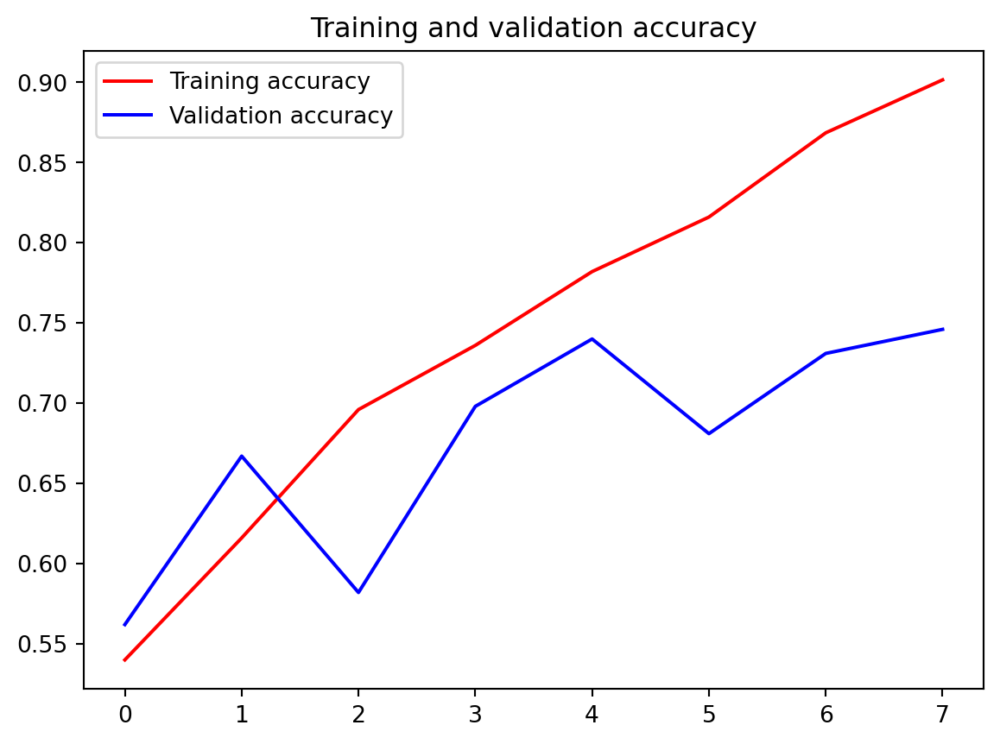
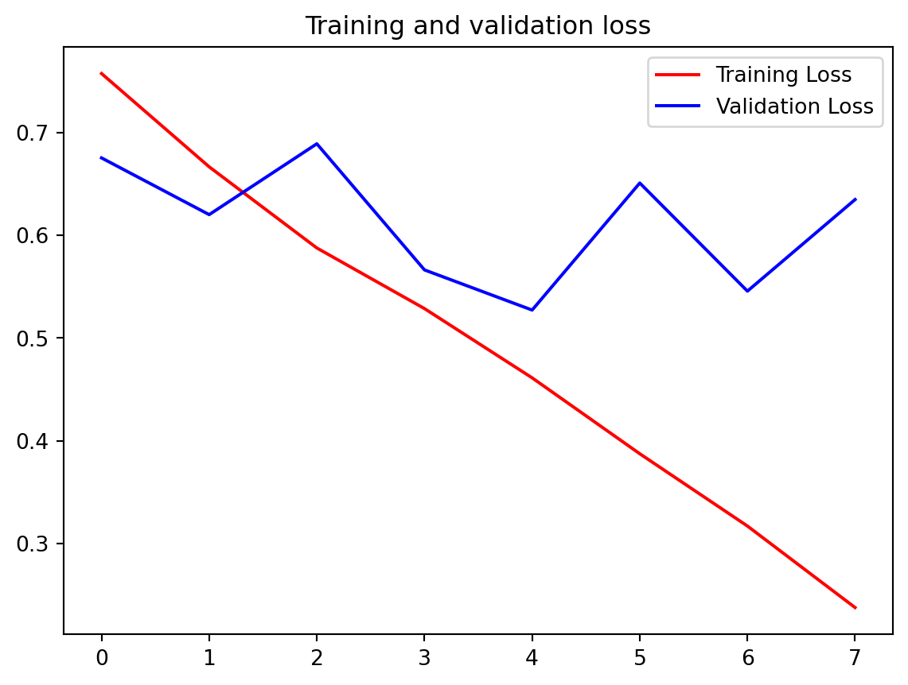

Code
import urllib.request
urllib.request.urlretrieve("https://storage.googleapis.com/mledu-datasets/cats_and_dogs_filtered.zip", "cats_and_dogs_filtered.zip")import urllib.request
urllib.request.urlretrieve("https://storage.googleapis.com/mledu-datasets/cats_and_dogs_filtered.zip", "cats_and_dogs_filtered.zip")import zipfile
# Unzip the archive
local_zip = './cats_and_dogs_filtered.zip'
zip_ref = zipfile.ZipFile(local_zip, 'r')
zip_ref.extractall()
zip_ref.close()from PIL import Image
im = Image.open('./tmp/cats_and_dogs_filtered/train/cats/cat.0.jpg')
im.size # (width,height) (500, 374)import os
base_dir = './tmp/cats_and_dogs_filtered'
print("Contents of base directory:")
print(os.listdir(base_dir))
print("\nContents of train directory:")
print(os.listdir(f'{base_dir}/train'))
print("\nContents of validation directory:")
print(os.listdir(f'{base_dir}/validation'))
train_dir = os.path.join(base_dir, 'train')
validation_dir = os.path.join(base_dir, 'validation')
# Directory with training cat/dog pictures
train_cats_dir = os.path.join(train_dir, 'cats')
train_dogs_dir = os.path.join(train_dir, 'dogs')
# Directory with validation cat/dog pictures
validation_cats_dir = os.path.join(validation_dir, 'cats')
validation_dogs_dir = os.path.join(validation_dir, 'dogs')Contents of base directory:
['.DS_Store', 'train', 'validation']
Contents of train directory:
['dogs', 'cats', '.DS_Store']
Contents of validation directory:
['dogs', 'cats', '.DS_Store']train_cat_fnames = os.listdir( train_cats_dir )
train_dog_fnames = os.listdir( train_dogs_dir )
print(train_cat_fnames[:10])
print(train_dog_fnames[:10])['cat.952.jpg', 'cat.946.jpg', 'cat.6.jpg', 'cat.749.jpg', 'cat.991.jpg', 'cat.985.jpg', 'cat.775.jpg', 'cat.761.jpg', 'cat.588.jpg', 'cat.239.jpg']
['dog.775.jpg', 'dog.761.jpg', 'dog.991.jpg', 'dog.749.jpg', 'dog.985.jpg', 'dog.952.jpg', 'dog.946.jpg', 'dog.211.jpg', 'dog.577.jpg', 'dog.563.jpg']print('total training cat images :', len(os.listdir( train_cats_dir ) ))
print('total training dog images :', len(os.listdir( train_dogs_dir ) ))
print('total validation cat images :', len(os.listdir( validation_cats_dir ) ))
print('total validation dog images :', len(os.listdir( validation_dogs_dir ) ))total training cat images : 1000
total training dog images : 1000
total validation cat images : 500
total validation dog images : 500import matplotlib.image as mpimg
import matplotlib.pyplot as plt
# Parameters for our graph; we'll output images in a 4x4 configuration
nrows = 4
ncols = 4
pic_index = 0 # Index for iterating over images
# Set up matplotlib fig, and size it to fit 4x4 pics
fig = plt.gcf()
fig.set_size_inches(ncols*4, nrows*4)
pic_index+=8
next_cat_pix = [os.path.join(train_cats_dir, fname)
for fname in train_cat_fnames[ pic_index-8:pic_index]
]
next_dog_pix = [os.path.join(train_dogs_dir, fname)
for fname in train_dog_fnames[ pic_index-8:pic_index]
]
for i, img_path in enumerate(next_cat_pix+next_dog_pix):
# Set up subplot; subplot indices start at 1
sp = plt.subplot(nrows, ncols, i + 1)
sp.axis('Off') # Don't show axes (or gridlines)
img = mpimg.imread(img_path)
plt.imshow(img)
plt.show()
import tensorflow as tf
import numpy as np
from tensorflow import keras
import os
print(tf.__version__)2.16.1ImageDataGenerator: All images will be resized to 150x150
from tensorflow.keras.preprocessing.image import ImageDataGenerator
# All images will be rescaled by 1./255.
train_datagen = ImageDataGenerator( rescale = 1.0/255. )
test_datagen = ImageDataGenerator( rescale = 1.0/255. )Image Data from directory
# --------------------
# Flow training images in batches of 20 using train_datagen generator
# --------------------
train_generator = train_datagen.flow_from_directory(train_dir,
batch_size=20,
class_mode='binary',
target_size=(150, 150))
# --------------------
# Flow validation images in batches of 20 using test_datagen generator
# --------------------
validation_generator = test_datagen.flow_from_directory(validation_dir,
batch_size=20,
class_mode = 'binary',
target_size = (150, 150))Found 2000 images belonging to 2 classes.
Found 1000 images belonging to 2 classes.input 150 by 150 color image
flow into 16 3by3 convolutional layers and 2by2 pooling
output is 1 neural(0/1) sigmoid function.its good for binary
import tensorflow as tf
model = tf.keras.models.Sequential([
# Note the input shape is the desired size of the image 150x150 with 3 bytes color
tf.keras.layers.Conv2D(16, (3,3), activation='relu', input_shape=(150, 150, 3)),
tf.keras.layers.MaxPooling2D(2,2),
tf.keras.layers.Conv2D(32, (3,3), activation='relu'),
tf.keras.layers.MaxPooling2D(2,2),
tf.keras.layers.Conv2D(64, (3,3), activation='relu'),
tf.keras.layers.MaxPooling2D(2,2),
# Flatten the results to feed into a DNN
tf.keras.layers.Flatten(),
# 512 neuron hidden layer
tf.keras.layers.Dense(512, activation='relu'),
# Only 1 output neuron. It will contain a value from 0-1 where 0 for 1 class ('cats') and 1 for the other ('dogs')
tf.keras.layers.Dense(1, activation='sigmoid')
])# Print the model summary
model.summary()Model: "sequential"
┏━━━━━━━━━━━━━━━━━━━━━━━━━━━━━━━━━┳━━━━━━━━━━━━━━━━━━━━━━━━┳━━━━━━━━━━━━━━━┓ ┃ Layer (type) ┃ Output Shape ┃ Param # ┃ ┡━━━━━━━━━━━━━━━━━━━━━━━━━━━━━━━━━╇━━━━━━━━━━━━━━━━━━━━━━━━╇━━━━━━━━━━━━━━━┩ │ conv2d (Conv2D) │ (None, 148, 148, 16) │ 448 │ ├─────────────────────────────────┼────────────────────────┼───────────────┤ │ max_pooling2d (MaxPooling2D) │ (None, 74, 74, 16) │ 0 │ ├─────────────────────────────────┼────────────────────────┼───────────────┤ │ conv2d_1 (Conv2D) │ (None, 72, 72, 32) │ 4,640 │ ├─────────────────────────────────┼────────────────────────┼───────────────┤ │ max_pooling2d_1 (MaxPooling2D) │ (None, 36, 36, 32) │ 0 │ ├─────────────────────────────────┼────────────────────────┼───────────────┤ │ conv2d_2 (Conv2D) │ (None, 34, 34, 64) │ 18,496 │ ├─────────────────────────────────┼────────────────────────┼───────────────┤ │ max_pooling2d_2 (MaxPooling2D) │ (None, 17, 17, 64) │ 0 │ ├─────────────────────────────────┼────────────────────────┼───────────────┤ │ flatten (Flatten) │ (None, 18496) │ 0 │ ├─────────────────────────────────┼────────────────────────┼───────────────┤ │ dense (Dense) │ (None, 512) │ 9,470,464 │ ├─────────────────────────────────┼────────────────────────┼───────────────┤ │ dense_1 (Dense) │ (None, 1) │ 513 │ └─────────────────────────────────┴────────────────────────┴───────────────┘
Total params: 9,494,561 (36.22 MB)
Trainable params: 9,494,561 (36.22 MB)
Non-trainable params: 0 (0.00 B)
# v2.11+ optimizer `tf.keras.optimizers.RMSprop` runs slowly on M1/M2 Macs
from tensorflow.keras.optimizers import RMSprop
model.compile(loss='binary_crossentropy',
optimizer=RMSprop(learning_rate=0.001),
metrics=['accuracy'])class myCallback(tf.keras.callbacks.Callback):
def on_epoch_end(self, epoch, logs={}):
'''
Halts the training when the loss falls below 0.15
Args:
epoch (integer) - index of epoch (required but unused in the function definition below)
logs (dict) - metric results from the training epoch
'''
# Check the loss
if(logs.get('loss') < 0.15):
# Stop if threshold is met
print("\nLoss is lower than 0.2 so cancelling training!")
print("cancelling training with:")
print(epoch+1)
self.model.stop_training = True
# Instantiate class
callbacks = myCallback()history = model.fit(
train_generator,
epochs=8,
validation_data=validation_generator,
callbacks=[callbacks]
)Epoch 1/8
1/100 ━━━━━━━━━━━━━━━━━━━━ 59s 598ms/step - accuracy: 0.3000 - loss: 0.7178 2/100 ━━━━━━━━━━━━━━━━━━━━ 8s 84ms/step - accuracy: 0.3250 - loss: 2.3252 3/100 ━━━━━━━━━━━━━━━━━━━━ 7s 81ms/step - accuracy: 0.3611 - loss: 2.4945 4/100 ━━━━━━━━━━━━━━━━━━━━ 7s 79ms/step - accuracy: 0.3865 - loss: 2.4462 5/100 ━━━━━━━━━━━━━━━━━━━━ 7s 79ms/step - accuracy: 0.4032 - loss: 2.3534 6/100 ━━━━━━━━━━━━━━━━━━━━ 7s 79ms/step - accuracy: 0.4179 - loss: 2.2552 7/100 ━━━━━━━━━━━━━━━━━━━━ 7s 78ms/step - accuracy: 0.4317 - loss: 2.1624 8/100 ━━━━━━━━━━━━━━━━━━━━ 7s 78ms/step - accuracy: 0.4433 - loss: 2.0780 9/100 ━━━━━━━━━━━━━━━━━━━━ 7s 77ms/step - accuracy: 0.4515 - loss: 2.0026 10/100 ━━━━━━━━━━━━━━━━━━━━ 6s 77ms/step - accuracy: 0.4578 - loss: 1.9353 11/100 ━━━━━━━━━━━━━━━━━━━━ 7s 81ms/step - accuracy: 0.4629 - loss: 1.8749 12/100 ━━━━━━━━━━━━━━━━━━━━ 7s 83ms/step - accuracy: 0.4660 - loss: 1.8216 13/100 ━━━━━━━━━━━━━━━━━━━━ 7s 82ms/step - accuracy: 0.4671 - loss: 1.7736 14/100 ━━━━━━━━━━━━━━━━━━━━ 7s 81ms/step - accuracy: 0.4680 - loss: 1.7298 15/100 ━━━━━━━━━━━━━━━━━━━━ 6s 81ms/step - accuracy: 0.4692 - loss: 1.6897 16/100 ━━━━━━━━━━━━━━━━━━━━ 6s 81ms/step - accuracy: 0.4702 - loss: 1.6530 17/100 ━━━━━━━━━━━━━━━━━━━━ 6s 80ms/step - accuracy: 0.4709 - loss: 1.6192 18/100 ━━━━━━━━━━━━━━━━━━━━ 6s 80ms/step - accuracy: 0.4713 - loss: 1.5879 19/100 ━━━━━━━━━━━━━━━━━━━━ 6s 80ms/step - accuracy: 0.4719 - loss: 1.5589 20/100 ━━━━━━━━━━━━━━━━━━━━ 6s 79ms/step - accuracy: 0.4728 - loss: 1.5319 21/100 ━━━━━━━━━━━━━━━━━━━━ 6s 79ms/step - accuracy: 0.4736 - loss: 1.5067 22/100 ━━━━━━━━━━━━━━━━━━━━ 6s 79ms/step - accuracy: 0.4743 - loss: 1.4832 23/100 ━━━━━━━━━━━━━━━━━━━━ 6s 79ms/step - accuracy: 0.4751 - loss: 1.4611 24/100 ━━━━━━━━━━━━━━━━━━━━ 6s 79ms/step - accuracy: 0.4760 - loss: 1.4404 25/100 ━━━━━━━━━━━━━━━━━━━━ 5s 79ms/step - accuracy: 0.4768 - loss: 1.4209 26/100 ━━━━━━━━━━━━━━━━━━━━ 5s 79ms/step - accuracy: 0.4780 - loss: 1.4025 27/100 ━━━━━━━━━━━━━━━━━━━━ 5s 79ms/step - accuracy: 0.4795 - loss: 1.3851 28/100 ━━━━━━━━━━━━━━━━━━━━ 5s 78ms/step - accuracy: 0.4811 - loss: 1.3686 29/100 ━━━━━━━━━━━━━━━━━━━━ 5s 78ms/step - accuracy: 0.4828 - loss: 1.3530 30/100 ━━━━━━━━━━━━━━━━━━━━ 5s 78ms/step - accuracy: 0.4844 - loss: 1.3382 31/100 ━━━━━━━━━━━━━━━━━━━━ 5s 78ms/step - accuracy: 0.4858 - loss: 1.3242 32/100 ━━━━━━━━━━━━━━━━━━━━ 5s 78ms/step - accuracy: 0.4871 - loss: 1.3108 33/100 ━━━━━━━━━━━━━━━━━━━━ 5s 78ms/step - accuracy: 0.4885 - loss: 1.2980 34/100 ━━━━━━━━━━━━━━━━━━━━ 5s 78ms/step - accuracy: 0.4899 - loss: 1.2858 35/100 ━━━━━━━━━━━━━━━━━━━━ 5s 78ms/step - accuracy: 0.4911 - loss: 1.2742 36/100 ━━━━━━━━━━━━━━━━━━━━ 4s 78ms/step - accuracy: 0.4922 - loss: 1.2631 37/100 ━━━━━━━━━━━━━━━━━━━━ 4s 78ms/step - accuracy: 0.4932 - loss: 1.2524 38/100 ━━━━━━━━━━━━━━━━━━━━ 4s 78ms/step - accuracy: 0.4942 - loss: 1.2422 39/100 ━━━━━━━━━━━━━━━━━━━━ 4s 78ms/step - accuracy: 0.4951 - loss: 1.2324 40/100 ━━━━━━━━━━━━━━━━━━━━ 4s 78ms/step - accuracy: 0.4961 - loss: 1.2230 41/100 ━━━━━━━━━━━━━━━━━━━━ 4s 78ms/step - accuracy: 0.4970 - loss: 1.2140 42/100 ━━━━━━━━━━━━━━━━━━━━ 4s 78ms/step - accuracy: 0.4981 - loss: 1.2052 43/100 ━━━━━━━━━━━━━━━━━━━━ 4s 78ms/step - accuracy: 0.4990 - loss: 1.1968 44/100 ━━━━━━━━━━━━━━━━━━━━ 4s 77ms/step - accuracy: 0.4999 - loss: 1.1887 45/100 ━━━━━━━━━━━━━━━━━━━━ 4s 78ms/step - accuracy: 0.5006 - loss: 1.1809 46/100 ━━━━━━━━━━━━━━━━━━━━ 4s 77ms/step - accuracy: 0.5014 - loss: 1.1734 47/100 ━━━━━━━━━━━━━━━━━━━━ 4s 77ms/step - accuracy: 0.5020 - loss: 1.1661 48/100 ━━━━━━━━━━━━━━━━━━━━ 4s 77ms/step - accuracy: 0.5026 - loss: 1.1591 49/100 ━━━━━━━━━━━━━━━━━━━━ 3s 77ms/step - accuracy: 0.5032 - loss: 1.1523 50/100 ━━━━━━━━━━━━━━━━━━━━ 3s 77ms/step - accuracy: 0.5038 - loss: 1.1457 51/100 ━━━━━━━━━━━━━━━━━━━━ 3s 77ms/step - accuracy: 0.5043 - loss: 1.1393 52/100 ━━━━━━━━━━━━━━━━━━━━ 3s 77ms/step - accuracy: 0.5048 - loss: 1.1331 53/100 ━━━━━━━━━━━━━━━━━━━━ 3s 77ms/step - accuracy: 0.5054 - loss: 1.1271 54/100 ━━━━━━━━━━━━━━━━━━━━ 3s 77ms/step - accuracy: 0.5060 - loss: 1.1213 55/100 ━━━━━━━━━━━━━━━━━━━━ 3s 77ms/step - accuracy: 0.5066 - loss: 1.1157 56/100 ━━━━━━━━━━━━━━━━━━━━ 3s 77ms/step - accuracy: 0.5071 - loss: 1.1102 57/100 ━━━━━━━━━━━━━━━━━━━━ 3s 77ms/step - accuracy: 0.5075 - loss: 1.1049 58/100 ━━━━━━━━━━━━━━━━━━━━ 3s 77ms/step - accuracy: 0.5080 - loss: 1.0997 59/100 ━━━━━━━━━━━━━━━━━━━━ 3s 77ms/step - accuracy: 0.5085 - loss: 1.0946 60/100 ━━━━━━━━━━━━━━━━━━━━ 3s 77ms/step - accuracy: 0.5090 - loss: 1.0897 61/100 ━━━━━━━━━━━━━━━━━━━━ 2s 77ms/step - accuracy: 0.5094 - loss: 1.0849 62/100 ━━━━━━━━━━━━━━━━━━━━ 2s 77ms/step - accuracy: 0.5098 - loss: 1.0803 63/100 ━━━━━━━━━━━━━━━━━━━━ 2s 77ms/step - accuracy: 0.5103 - loss: 1.0758 64/100 ━━━━━━━━━━━━━━━━━━━━ 2s 77ms/step - accuracy: 0.5106 - loss: 1.0714 65/100 ━━━━━━━━━━━━━━━━━━━━ 2s 77ms/step - accuracy: 0.5110 - loss: 1.0671 66/100 ━━━━━━━━━━━━━━━━━━━━ 2s 77ms/step - accuracy: 0.5113 - loss: 1.0629 67/100 ━━━━━━━━━━━━━━━━━━━━ 2s 77ms/step - accuracy: 0.5116 - loss: 1.0588 68/100 ━━━━━━━━━━━━━━━━━━━━ 2s 77ms/step - accuracy: 0.5118 - loss: 1.0549 69/100 ━━━━━━━━━━━━━━━━━━━━ 2s 77ms/step - accuracy: 0.5121 - loss: 1.0510 70/100 ━━━━━━━━━━━━━━━━━━━━ 2s 77ms/step - accuracy: 0.5123 - loss: 1.0472 71/100 ━━━━━━━━━━━━━━━━━━━━ 2s 77ms/step - accuracy: 0.5126 - loss: 1.0435 72/100 ━━━━━━━━━━━━━━━━━━━━ 2s 77ms/step - accuracy: 0.5128 - loss: 1.0399 73/100 ━━━━━━━━━━━━━━━━━━━━ 2s 76ms/step - accuracy: 0.5130 - loss: 1.0363 74/100 ━━━━━━━━━━━━━━━━━━━━ 1s 76ms/step - accuracy: 0.5132 - loss: 1.0329 75/100 ━━━━━━━━━━━━━━━━━━━━ 1s 76ms/step - accuracy: 0.5134 - loss: 1.0295 76/100 ━━━━━━━━━━━━━━━━━━━━ 1s 76ms/step - accuracy: 0.5135 - loss: 1.0262 77/100 ━━━━━━━━━━━━━━━━━━━━ 1s 76ms/step - accuracy: 0.5137 - loss: 1.0229 78/100 ━━━━━━━━━━━━━━━━━━━━ 1s 76ms/step - accuracy: 0.5139 - loss: 1.0198 79/100 ━━━━━━━━━━━━━━━━━━━━ 1s 76ms/step - accuracy: 0.5141 - loss: 1.0166 80/100 ━━━━━━━━━━━━━━━━━━━━ 1s 76ms/step - accuracy: 0.5142 - loss: 1.0136 81/100 ━━━━━━━━━━━━━━━━━━━━ 1s 76ms/step - accuracy: 0.5144 - loss: 1.0106 82/100 ━━━━━━━━━━━━━━━━━━━━ 1s 76ms/step - accuracy: 0.5146 - loss: 1.0077 83/100 ━━━━━━━━━━━━━━━━━━━━ 1s 76ms/step - accuracy: 0.5148 - loss: 1.0048 84/100 ━━━━━━━━━━━━━━━━━━━━ 1s 76ms/step - accuracy: 0.5151 - loss: 1.0021 85/100 ━━━━━━━━━━━━━━━━━━━━ 1s 76ms/step - accuracy: 0.5153 - loss: 0.9993 86/100 ━━━━━━━━━━━━━━━━━━━━ 1s 76ms/step - accuracy: 0.5155 - loss: 0.9966 87/100 ━━━━━━━━━━━━━━━━━━━━ 0s 76ms/step - accuracy: 0.5157 - loss: 0.9940 88/100 ━━━━━━━━━━━━━━━━━━━━ 0s 76ms/step - accuracy: 0.5159 - loss: 0.9914 89/100 ━━━━━━━━━━━━━━━━━━━━ 0s 76ms/step - accuracy: 0.5161 - loss: 0.9889 90/100 ━━━━━━━━━━━━━━━━━━━━ 0s 76ms/step - accuracy: 0.5163 - loss: 0.9864 91/100 ━━━━━━━━━━━━━━━━━━━━ 0s 76ms/step - accuracy: 0.5166 - loss: 0.9840 92/100 ━━━━━━━━━━━━━━━━━━━━ 0s 76ms/step - accuracy: 0.5168 - loss: 0.9816 93/100 ━━━━━━━━━━━━━━━━━━━━ 0s 76ms/step - accuracy: 0.5170 - loss: 0.9792 94/100 ━━━━━━━━━━━━━━━━━━━━ 0s 76ms/step - accuracy: 0.5173 - loss: 0.9769 95/100 ━━━━━━━━━━━━━━━━━━━━ 0s 76ms/step - accuracy: 0.5175 - loss: 0.9746 96/100 ━━━━━━━━━━━━━━━━━━━━ 0s 76ms/step - accuracy: 0.5177 - loss: 0.9724 97/100 ━━━━━━━━━━━━━━━━━━━━ 0s 76ms/step - accuracy: 0.5179 - loss: 0.9702 98/100 ━━━━━━━━━━━━━━━━━━━━ 0s 76ms/step - accuracy: 0.5181 - loss: 0.9681 99/100 ━━━━━━━━━━━━━━━━━━━━ 0s 76ms/step - accuracy: 0.5183 - loss: 0.9659100/100 ━━━━━━━━━━━━━━━━━━━━ 0s 76ms/step - accuracy: 0.5185 - loss: 0.9639100/100 ━━━━━━━━━━━━━━━━━━━━ 9s 90ms/step - accuracy: 0.5187 - loss: 0.9618 - val_accuracy: 0.5620 - val_loss: 0.6752
Epoch 2/8
1/100 ━━━━━━━━━━━━━━━━━━━━ 23s 233ms/step - accuracy: 0.5000 - loss: 0.6845 2/100 ━━━━━━━━━━━━━━━━━━━━ 7s 76ms/step - accuracy: 0.5375 - loss: 0.6816 3/100 ━━━━━━━━━━━━━━━━━━━━ 7s 75ms/step - accuracy: 0.5361 - loss: 0.6814 4/100 ━━━━━━━━━━━━━━━━━━━━ 7s 75ms/step - accuracy: 0.5365 - loss: 0.6801 5/100 ━━━━━━━━━━━━━━━━━━━━ 7s 77ms/step - accuracy: 0.5352 - loss: 0.6792 6/100 ━━━━━━━━━━━━━━━━━━━━ 7s 77ms/step - accuracy: 0.5362 - loss: 0.6782 7/100 ━━━━━━━━━━━━━━━━━━━━ 7s 77ms/step - accuracy: 0.5403 - loss: 0.6769 8/100 ━━━━━━━━━━━━━━━━━━━━ 7s 77ms/step - accuracy: 0.5430 - loss: 0.6755 9/100 ━━━━━━━━━━━━━━━━━━━━ 7s 77ms/step - accuracy: 0.5463 - loss: 0.6742 10/100 ━━━━━━━━━━━━━━━━━━━━ 6s 77ms/step - accuracy: 0.5492 - loss: 0.6728 11/100 ━━━━━━━━━━━━━━━━━━━━ 6s 78ms/step - accuracy: 0.5534 - loss: 0.6707 12/100 ━━━━━━━━━━━━━━━━━━━━ 6s 78ms/step - accuracy: 0.5569 - loss: 0.6752 13/100 ━━━━━━━━━━━━━━━━━━━━ 6s 78ms/step - accuracy: 0.5596 - loss: 0.6788 14/100 ━━━━━━━━━━━━━━━━━━━━ 6s 78ms/step - accuracy: 0.5617 - loss: 0.6817 15/100 ━━━━━━━━━━━━━━━━━━━━ 6s 78ms/step - accuracy: 0.5645 - loss: 0.6836 16/100 ━━━━━━━━━━━━━━━━━━━━ 6s 78ms/step - accuracy: 0.5663 - loss: 0.6852 17/100 ━━━━━━━━━━━━━━━━━━━━ 6s 77ms/step - accuracy: 0.5680 - loss: 0.6865 18/100 ━━━━━━━━━━━━━━━━━━━━ 6s 77ms/step - accuracy: 0.5688 - loss: 0.6878 19/100 ━━━━━━━━━━━━━━━━━━━━ 6s 77ms/step - accuracy: 0.5695 - loss: 0.6887 20/100 ━━━━━━━━━━━━━━━━━━━━ 6s 77ms/step - accuracy: 0.5698 - loss: 0.6896 21/100 ━━━━━━━━━━━━━━━━━━━━ 6s 77ms/step - accuracy: 0.5706 - loss: 0.6902 22/100 ━━━━━━━━━━━━━━━━━━━━ 6s 77ms/step - accuracy: 0.5715 - loss: 0.6906 23/100 ━━━━━━━━━━━━━━━━━━━━ 5s 77ms/step - accuracy: 0.5727 - loss: 0.6908 24/100 ━━━━━━━━━━━━━━━━━━━━ 5s 77ms/step - accuracy: 0.5739 - loss: 0.6909 25/100 ━━━━━━━━━━━━━━━━━━━━ 5s 77ms/step - accuracy: 0.5747 - loss: 0.6910 26/100 ━━━━━━━━━━━━━━━━━━━━ 5s 77ms/step - accuracy: 0.5754 - loss: 0.6911 27/100 ━━━━━━━━━━━━━━━━━━━━ 5s 77ms/step - accuracy: 0.5760 - loss: 0.6910 28/100 ━━━━━━━━━━━━━━━━━━━━ 5s 77ms/step - accuracy: 0.5766 - loss: 0.6910 29/100 ━━━━━━━━━━━━━━━━━━━━ 5s 77ms/step - accuracy: 0.5771 - loss: 0.6909 30/100 ━━━━━━━━━━━━━━━━━━━━ 5s 77ms/step - accuracy: 0.5777 - loss: 0.6907 31/100 ━━━━━━━━━━━━━━━━━━━━ 5s 77ms/step - accuracy: 0.5781 - loss: 0.6905 32/100 ━━━━━━━━━━━━━━━━━━━━ 5s 77ms/step - accuracy: 0.5788 - loss: 0.6903 33/100 ━━━━━━━━━━━━━━━━━━━━ 5s 77ms/step - accuracy: 0.5794 - loss: 0.6900 34/100 ━━━━━━━━━━━━━━━━━━━━ 5s 77ms/step - accuracy: 0.5801 - loss: 0.6897 35/100 ━━━━━━━━━━━━━━━━━━━━ 5s 77ms/step - accuracy: 0.5807 - loss: 0.6894 36/100 ━━━━━━━━━━━━━━━━━━━━ 4s 77ms/step - accuracy: 0.5813 - loss: 0.6890 37/100 ━━━━━━━━━━━━━━━━━━━━ 4s 77ms/step - accuracy: 0.5815 - loss: 0.6888 38/100 ━━━━━━━━━━━━━━━━━━━━ 4s 77ms/step - accuracy: 0.5819 - loss: 0.6885 39/100 ━━━━━━━━━━━━━━━━━━━━ 4s 77ms/step - accuracy: 0.5821 - loss: 0.6885 40/100 ━━━━━━━━━━━━━━━━━━━━ 4s 77ms/step - accuracy: 0.5822 - loss: 0.6885 41/100 ━━━━━━━━━━━━━━━━━━━━ 4s 77ms/step - accuracy: 0.5822 - loss: 0.6885 42/100 ━━━━━━━━━━━━━━━━━━━━ 4s 77ms/step - accuracy: 0.5822 - loss: 0.6885 43/100 ━━━━━━━━━━━━━━━━━━━━ 4s 77ms/step - accuracy: 0.5823 - loss: 0.6884 44/100 ━━━━━━━━━━━━━━━━━━━━ 4s 77ms/step - accuracy: 0.5822 - loss: 0.6884 45/100 ━━━━━━━━━━━━━━━━━━━━ 4s 77ms/step - accuracy: 0.5824 - loss: 0.6883 46/100 ━━━━━━━━━━━━━━━━━━━━ 4s 77ms/step - accuracy: 0.5826 - loss: 0.6882 47/100 ━━━━━━━━━━━━━━━━━━━━ 4s 77ms/step - accuracy: 0.5828 - loss: 0.6880 48/100 ━━━━━━━━━━━━━━━━━━━━ 4s 77ms/step - accuracy: 0.5830 - loss: 0.6879 49/100 ━━━━━━━━━━━━━━━━━━━━ 3s 77ms/step - accuracy: 0.5832 - loss: 0.6877 50/100 ━━━━━━━━━━━━━━━━━━━━ 3s 77ms/step - accuracy: 0.5835 - loss: 0.6876 51/100 ━━━━━━━━━━━━━━━━━━━━ 3s 77ms/step - accuracy: 0.5837 - loss: 0.6875 52/100 ━━━━━━━━━━━━━━━━━━━━ 3s 77ms/step - accuracy: 0.5839 - loss: 0.6874 53/100 ━━━━━━━━━━━━━━━━━━━━ 3s 77ms/step - accuracy: 0.5840 - loss: 0.6874 54/100 ━━━━━━━━━━━━━━━━━━━━ 3s 77ms/step - accuracy: 0.5842 - loss: 0.6873 55/100 ━━━━━━━━━━━━━━━━━━━━ 3s 77ms/step - accuracy: 0.5845 - loss: 0.6872 56/100 ━━━━━━━━━━━━━━━━━━━━ 3s 77ms/step - accuracy: 0.5847 - loss: 0.6871 57/100 ━━━━━━━━━━━━━━━━━━━━ 3s 77ms/step - accuracy: 0.5850 - loss: 0.6870 58/100 ━━━━━━━━━━━━━━━━━━━━ 3s 77ms/step - accuracy: 0.5852 - loss: 0.6870 59/100 ━━━━━━━━━━━━━━━━━━━━ 3s 77ms/step - accuracy: 0.5855 - loss: 0.6869 60/100 ━━━━━━━━━━━━━━━━━━━━ 3s 77ms/step - accuracy: 0.5857 - loss: 0.6868 61/100 ━━━━━━━━━━━━━━━━━━━━ 3s 77ms/step - accuracy: 0.5860 - loss: 0.6867 62/100 ━━━━━━━━━━━━━━━━━━━━ 2s 77ms/step - accuracy: 0.5863 - loss: 0.6866 63/100 ━━━━━━━━━━━━━━━━━━━━ 2s 77ms/step - accuracy: 0.5866 - loss: 0.6864 64/100 ━━━━━━━━━━━━━━━━━━━━ 2s 77ms/step - accuracy: 0.5869 - loss: 0.6863 65/100 ━━━━━━━━━━━━━━━━━━━━ 2s 77ms/step - accuracy: 0.5872 - loss: 0.6862 66/100 ━━━━━━━━━━━━━━━━━━━━ 2s 77ms/step - accuracy: 0.5875 - loss: 0.6860 67/100 ━━━━━━━━━━━━━━━━━━━━ 2s 77ms/step - accuracy: 0.5878 - loss: 0.6859 68/100 ━━━━━━━━━━━━━━━━━━━━ 2s 77ms/step - accuracy: 0.5880 - loss: 0.6858 69/100 ━━━━━━━━━━━━━━━━━━━━ 2s 77ms/step - accuracy: 0.5882 - loss: 0.6856 70/100 ━━━━━━━━━━━━━━━━━━━━ 2s 77ms/step - accuracy: 0.5884 - loss: 0.6855 71/100 ━━━━━━━━━━━━━━━━━━━━ 2s 77ms/step - accuracy: 0.5886 - loss: 0.6854 72/100 ━━━━━━━━━━━━━━━━━━━━ 2s 77ms/step - accuracy: 0.5888 - loss: 0.6853 73/100 ━━━━━━━━━━━━━━━━━━━━ 2s 77ms/step - accuracy: 0.5891 - loss: 0.6851 74/100 ━━━━━━━━━━━━━━━━━━━━ 2s 77ms/step - accuracy: 0.5894 - loss: 0.6850 75/100 ━━━━━━━━━━━━━━━━━━━━ 1s 78ms/step - accuracy: 0.5897 - loss: 0.6848 76/100 ━━━━━━━━━━━━━━━━━━━━ 1s 78ms/step - accuracy: 0.5900 - loss: 0.6846 77/100 ━━━━━━━━━━━━━━━━━━━━ 1s 78ms/step - accuracy: 0.5903 - loss: 0.6845 78/100 ━━━━━━━━━━━━━━━━━━━━ 1s 78ms/step - accuracy: 0.5905 - loss: 0.6843 79/100 ━━━━━━━━━━━━━━━━━━━━ 1s 78ms/step - accuracy: 0.5908 - loss: 0.6842 80/100 ━━━━━━━━━━━━━━━━━━━━ 1s 79ms/step - accuracy: 0.5911 - loss: 0.6841 81/100 ━━━━━━━━━━━━━━━━━━━━ 1s 79ms/step - accuracy: 0.5913 - loss: 0.6839 82/100 ━━━━━━━━━━━━━━━━━━━━ 1s 79ms/step - accuracy: 0.5915 - loss: 0.6838 83/100 ━━━━━━━━━━━━━━━━━━━━ 1s 78ms/step - accuracy: 0.5918 - loss: 0.6836 84/100 ━━━━━━━━━━━━━━━━━━━━ 1s 78ms/step - accuracy: 0.5920 - loss: 0.6835 85/100 ━━━━━━━━━━━━━━━━━━━━ 1s 78ms/step - accuracy: 0.5923 - loss: 0.6833 86/100 ━━━━━━━━━━━━━━━━━━━━ 1s 78ms/step - accuracy: 0.5926 - loss: 0.6832 87/100 ━━━━━━━━━━━━━━━━━━━━ 1s 78ms/step - accuracy: 0.5928 - loss: 0.6830 88/100 ━━━━━━━━━━━━━━━━━━━━ 0s 78ms/step - accuracy: 0.5931 - loss: 0.6829 89/100 ━━━━━━━━━━━━━━━━━━━━ 0s 78ms/step - accuracy: 0.5934 - loss: 0.6827 90/100 ━━━━━━━━━━━━━━━━━━━━ 0s 78ms/step - accuracy: 0.5936 - loss: 0.6825 91/100 ━━━━━━━━━━━━━━━━━━━━ 0s 78ms/step - accuracy: 0.5939 - loss: 0.6824 92/100 ━━━━━━━━━━━━━━━━━━━━ 0s 78ms/step - accuracy: 0.5941 - loss: 0.6822 93/100 ━━━━━━━━━━━━━━━━━━━━ 0s 78ms/step - accuracy: 0.5944 - loss: 0.6820 94/100 ━━━━━━━━━━━━━━━━━━━━ 0s 78ms/step - accuracy: 0.5946 - loss: 0.6819 95/100 ━━━━━━━━━━━━━━━━━━━━ 0s 78ms/step - accuracy: 0.5948 - loss: 0.6817 96/100 ━━━━━━━━━━━━━━━━━━━━ 0s 78ms/step - accuracy: 0.5950 - loss: 0.6816 97/100 ━━━━━━━━━━━━━━━━━━━━ 0s 77ms/step - accuracy: 0.5953 - loss: 0.6814 98/100 ━━━━━━━━━━━━━━━━━━━━ 0s 77ms/step - accuracy: 0.5955 - loss: 0.6813 99/100 ━━━━━━━━━━━━━━━━━━━━ 0s 77ms/step - accuracy: 0.5957 - loss: 0.6812100/100 ━━━━━━━━━━━━━━━━━━━━ 0s 77ms/step - accuracy: 0.5959 - loss: 0.6810100/100 ━━━━━━━━━━━━━━━━━━━━ 9s 90ms/step - accuracy: 0.5961 - loss: 0.6809 - val_accuracy: 0.6670 - val_loss: 0.6200
Epoch 3/8
1/100 ━━━━━━━━━━━━━━━━━━━━ 23s 234ms/step - accuracy: 0.7500 - loss: 0.5546 2/100 ━━━━━━━━━━━━━━━━━━━━ 7s 72ms/step - accuracy: 0.7375 - loss: 0.5848 3/100 ━━━━━━━━━━━━━━━━━━━━ 7s 73ms/step - accuracy: 0.7194 - loss: 0.5963 4/100 ━━━━━━━━━━━━━━━━━━━━ 6s 72ms/step - accuracy: 0.7115 - loss: 0.5934 5/100 ━━━━━━━━━━━━━━━━━━━━ 6s 73ms/step - accuracy: 0.7032 - loss: 0.5924 6/100 ━━━━━━━━━━━━━━━━━━━━ 6s 73ms/step - accuracy: 0.6915 - loss: 0.5977 7/100 ━━━━━━━━━━━━━━━━━━━━ 6s 73ms/step - accuracy: 0.6846 - loss: 0.5997 8/100 ━━━━━━━━━━━━━━━━━━━━ 6s 72ms/step - accuracy: 0.6803 - loss: 0.6007 9/100 ━━━━━━━━━━━━━━━━━━━━ 6s 72ms/step - accuracy: 0.6769 - loss: 0.6011 10/100 ━━━━━━━━━━━━━━━━━━━━ 6s 72ms/step - accuracy: 0.6762 - loss: 0.6005 11/100 ━━━━━━━━━━━━━━━━━━━━ 6s 72ms/step - accuracy: 0.6771 - loss: 0.5991 12/100 ━━━━━━━━━━━━━━━━━━━━ 6s 72ms/step - accuracy: 0.6769 - loss: 0.5988 13/100 ━━━━━━━━━━━━━━━━━━━━ 6s 72ms/step - accuracy: 0.6769 - loss: 0.5990 14/100 ━━━━━━━━━━━━━━━━━━━━ 6s 73ms/step - accuracy: 0.6768 - loss: 0.5990 15/100 ━━━━━━━━━━━━━━━━━━━━ 6s 74ms/step - accuracy: 0.6768 - loss: 0.5986 16/100 ━━━━━━━━━━━━━━━━━━━━ 6s 75ms/step - accuracy: 0.6765 - loss: 0.5982 17/100 ━━━━━━━━━━━━━━━━━━━━ 6s 75ms/step - accuracy: 0.6767 - loss: 0.5976 18/100 ━━━━━━━━━━━━━━━━━━━━ 6s 75ms/step - accuracy: 0.6764 - loss: 0.5980 19/100 ━━━━━━━━━━━━━━━━━━━━ 6s 76ms/step - accuracy: 0.6761 - loss: 0.5984 20/100 ━━━━━━━━━━━━━━━━━━━━ 6s 76ms/step - accuracy: 0.6762 - loss: 0.5984 21/100 ━━━━━━━━━━━━━━━━━━━━ 6s 76ms/step - accuracy: 0.6759 - loss: 0.5990 22/100 ━━━━━━━━━━━━━━━━━━━━ 5s 76ms/step - accuracy: 0.6755 - loss: 0.5995 23/100 ━━━━━━━━━━━━━━━━━━━━ 5s 76ms/step - accuracy: 0.6751 - loss: 0.6000 24/100 ━━━━━━━━━━━━━━━━━━━━ 5s 76ms/step - accuracy: 0.6748 - loss: 0.6004 25/100 ━━━━━━━━━━━━━━━━━━━━ 5s 76ms/step - accuracy: 0.6749 - loss: 0.6007 26/100 ━━━━━━━━━━━━━━━━━━━━ 5s 76ms/step - accuracy: 0.6749 - loss: 0.6011 27/100 ━━━━━━━━━━━━━━━━━━━━ 5s 76ms/step - accuracy: 0.6749 - loss: 0.6014 28/100 ━━━━━━━━━━━━━━━━━━━━ 5s 76ms/step - accuracy: 0.6752 - loss: 0.6015 29/100 ━━━━━━━━━━━━━━━━━━━━ 5s 77ms/step - accuracy: 0.6754 - loss: 0.6019 30/100 ━━━━━━━━━━━━━━━━━━━━ 5s 77ms/step - accuracy: 0.6755 - loss: 0.6022 31/100 ━━━━━━━━━━━━━━━━━━━━ 5s 77ms/step - accuracy: 0.6759 - loss: 0.6024 32/100 ━━━━━━━━━━━━━━━━━━━━ 5s 77ms/step - accuracy: 0.6763 - loss: 0.6024 33/100 ━━━━━━━━━━━━━━━━━━━━ 5s 77ms/step - accuracy: 0.6767 - loss: 0.6025 34/100 ━━━━━━━━━━━━━━━━━━━━ 5s 77ms/step - accuracy: 0.6771 - loss: 0.6024 35/100 ━━━━━━━━━━━━━━━━━━━━ 4s 77ms/step - accuracy: 0.6774 - loss: 0.6025 36/100 ━━━━━━━━━━━━━━━━━━━━ 4s 76ms/step - accuracy: 0.6777 - loss: 0.6025 37/100 ━━━━━━━━━━━━━━━━━━━━ 4s 76ms/step - accuracy: 0.6779 - loss: 0.6026 38/100 ━━━━━━━━━━━━━━━━━━━━ 4s 76ms/step - accuracy: 0.6782 - loss: 0.6025 39/100 ━━━━━━━━━━━━━━━━━━━━ 4s 76ms/step - accuracy: 0.6785 - loss: 0.6025 40/100 ━━━━━━━━━━━━━━━━━━━━ 4s 76ms/step - accuracy: 0.6788 - loss: 0.6024 41/100 ━━━━━━━━━━━━━━━━━━━━ 4s 76ms/step - accuracy: 0.6791 - loss: 0.6022 42/100 ━━━━━━━━━━━━━━━━━━━━ 4s 76ms/step - accuracy: 0.6794 - loss: 0.6022 43/100 ━━━━━━━━━━━━━━━━━━━━ 4s 76ms/step - accuracy: 0.6795 - loss: 0.6022 44/100 ━━━━━━━━━━━━━━━━━━━━ 4s 76ms/step - accuracy: 0.6797 - loss: 0.6021 45/100 ━━━━━━━━━━━━━━━━━━━━ 4s 76ms/step - accuracy: 0.6799 - loss: 0.6021 46/100 ━━━━━━━━━━━━━━━━━━━━ 4s 76ms/step - accuracy: 0.6800 - loss: 0.6020 47/100 ━━━━━━━━━━━━━━━━━━━━ 4s 76ms/step - accuracy: 0.6802 - loss: 0.6019 48/100 ━━━━━━━━━━━━━━━━━━━━ 3s 76ms/step - accuracy: 0.6803 - loss: 0.6018 49/100 ━━━━━━━━━━━━━━━━━━━━ 3s 76ms/step - accuracy: 0.6804 - loss: 0.6016 50/100 ━━━━━━━━━━━━━━━━━━━━ 3s 76ms/step - accuracy: 0.6807 - loss: 0.6014 51/100 ━━━━━━━━━━━━━━━━━━━━ 3s 76ms/step - accuracy: 0.6809 - loss: 0.6012 52/100 ━━━━━━━━━━━━━━━━━━━━ 3s 76ms/step - accuracy: 0.6810 - loss: 0.6011 53/100 ━━━━━━━━━━━━━━━━━━━━ 3s 76ms/step - accuracy: 0.6812 - loss: 0.6010 54/100 ━━━━━━━━━━━━━━━━━━━━ 3s 76ms/step - accuracy: 0.6814 - loss: 0.6009 55/100 ━━━━━━━━━━━━━━━━━━━━ 3s 76ms/step - accuracy: 0.6816 - loss: 0.6008 56/100 ━━━━━━━━━━━━━━━━━━━━ 3s 76ms/step - accuracy: 0.6817 - loss: 0.6006 57/100 ━━━━━━━━━━━━━━━━━━━━ 3s 76ms/step - accuracy: 0.6820 - loss: 0.6005 58/100 ━━━━━━━━━━━━━━━━━━━━ 3s 76ms/step - accuracy: 0.6822 - loss: 0.6002 59/100 ━━━━━━━━━━━━━━━━━━━━ 3s 76ms/step - accuracy: 0.6824 - loss: 0.6000 60/100 ━━━━━━━━━━━━━━━━━━━━ 3s 76ms/step - accuracy: 0.6826 - loss: 0.5998 61/100 ━━━━━━━━━━━━━━━━━━━━ 2s 76ms/step - accuracy: 0.6828 - loss: 0.5996 62/100 ━━━━━━━━━━━━━━━━━━━━ 2s 76ms/step - accuracy: 0.6830 - loss: 0.5994 63/100 ━━━━━━━━━━━━━━━━━━━━ 2s 76ms/step - accuracy: 0.6832 - loss: 0.5993 64/100 ━━━━━━━━━━━━━━━━━━━━ 2s 76ms/step - accuracy: 0.6833 - loss: 0.5992 65/100 ━━━━━━━━━━━━━━━━━━━━ 2s 76ms/step - accuracy: 0.6835 - loss: 0.5990 66/100 ━━━━━━━━━━━━━━━━━━━━ 2s 76ms/step - accuracy: 0.6837 - loss: 0.5989 67/100 ━━━━━━━━━━━━━━━━━━━━ 2s 76ms/step - accuracy: 0.6839 - loss: 0.5987 68/100 ━━━━━━━━━━━━━━━━━━━━ 2s 76ms/step - accuracy: 0.6841 - loss: 0.5986 69/100 ━━━━━━━━━━━━━━━━━━━━ 2s 76ms/step - accuracy: 0.6842 - loss: 0.5985 70/100 ━━━━━━━━━━━━━━━━━━━━ 2s 76ms/step - accuracy: 0.6844 - loss: 0.5983 71/100 ━━━━━━━━━━━━━━━━━━━━ 2s 75ms/step - accuracy: 0.6846 - loss: 0.5982 72/100 ━━━━━━━━━━━━━━━━━━━━ 2s 75ms/step - accuracy: 0.6847 - loss: 0.5981 73/100 ━━━━━━━━━━━━━━━━━━━━ 2s 75ms/step - accuracy: 0.6848 - loss: 0.5979 74/100 ━━━━━━━━━━━━━━━━━━━━ 1s 75ms/step - accuracy: 0.6849 - loss: 0.5978 75/100 ━━━━━━━━━━━━━━━━━━━━ 1s 75ms/step - accuracy: 0.6850 - loss: 0.5977 76/100 ━━━━━━━━━━━━━━━━━━━━ 1s 75ms/step - accuracy: 0.6852 - loss: 0.5976 77/100 ━━━━━━━━━━━━━━━━━━━━ 1s 75ms/step - accuracy: 0.6853 - loss: 0.5975 78/100 ━━━━━━━━━━━━━━━━━━━━ 1s 75ms/step - accuracy: 0.6854 - loss: 0.5973 79/100 ━━━━━━━━━━━━━━━━━━━━ 1s 75ms/step - accuracy: 0.6856 - loss: 0.5972 80/100 ━━━━━━━━━━━━━━━━━━━━ 1s 75ms/step - accuracy: 0.6857 - loss: 0.5971 81/100 ━━━━━━━━━━━━━━━━━━━━ 1s 75ms/step - accuracy: 0.6858 - loss: 0.5970 82/100 ━━━━━━━━━━━━━━━━━━━━ 1s 75ms/step - accuracy: 0.6859 - loss: 0.5968 83/100 ━━━━━━━━━━━━━━━━━━━━ 1s 75ms/step - accuracy: 0.6860 - loss: 0.5967 84/100 ━━━━━━━━━━━━━━━━━━━━ 1s 75ms/step - accuracy: 0.6862 - loss: 0.5966 85/100 ━━━━━━━━━━━━━━━━━━━━ 1s 75ms/step - accuracy: 0.6863 - loss: 0.5965 86/100 ━━━━━━━━━━━━━━━━━━━━ 1s 75ms/step - accuracy: 0.6864 - loss: 0.5963 87/100 ━━━━━━━━━━━━━━━━━━━━ 0s 75ms/step - accuracy: 0.6865 - loss: 0.5962 88/100 ━━━━━━━━━━━━━━━━━━━━ 0s 75ms/step - accuracy: 0.6867 - loss: 0.5961 89/100 ━━━━━━━━━━━━━━━━━━━━ 0s 75ms/step - accuracy: 0.6868 - loss: 0.5959 90/100 ━━━━━━━━━━━━━━━━━━━━ 0s 75ms/step - accuracy: 0.6870 - loss: 0.5958 91/100 ━━━━━━━━━━━━━━━━━━━━ 0s 75ms/step - accuracy: 0.6871 - loss: 0.5957 92/100 ━━━━━━━━━━━━━━━━━━━━ 0s 75ms/step - accuracy: 0.6872 - loss: 0.5956 93/100 ━━━━━━━━━━━━━━━━━━━━ 0s 75ms/step - accuracy: 0.6873 - loss: 0.5955 94/100 ━━━━━━━━━━━━━━━━━━━━ 0s 75ms/step - accuracy: 0.6874 - loss: 0.5953 95/100 ━━━━━━━━━━━━━━━━━━━━ 0s 75ms/step - accuracy: 0.6875 - loss: 0.5952 96/100 ━━━━━━━━━━━━━━━━━━━━ 0s 75ms/step - accuracy: 0.6876 - loss: 0.5951 97/100 ━━━━━━━━━━━━━━━━━━━━ 0s 75ms/step - accuracy: 0.6877 - loss: 0.5951 98/100 ━━━━━━━━━━━━━━━━━━━━ 0s 75ms/step - accuracy: 0.6877 - loss: 0.5950 99/100 ━━━━━━━━━━━━━━━━━━━━ 0s 75ms/step - accuracy: 0.6878 - loss: 0.5949100/100 ━━━━━━━━━━━━━━━━━━━━ 0s 75ms/step - accuracy: 0.6879 - loss: 0.5949100/100 ━━━━━━━━━━━━━━━━━━━━ 9s 90ms/step - accuracy: 0.6880 - loss: 0.5948 - val_accuracy: 0.5820 - val_loss: 0.6890
Epoch 4/8
1/100 ━━━━━━━━━━━━━━━━━━━━ 23s 239ms/step - accuracy: 0.6500 - loss: 0.6006 2/100 ━━━━━━━━━━━━━━━━━━━━ 6s 71ms/step - accuracy: 0.6875 - loss: 0.5686 3/100 ━━━━━━━━━━━━━━━━━━━━ 6s 72ms/step - accuracy: 0.7083 - loss: 0.5570 4/100 ━━━━━━━━━━━━━━━━━━━━ 6s 72ms/step - accuracy: 0.7031 - loss: 0.5666 5/100 ━━━━━━━━━━━━━━━━━━━━ 6s 73ms/step - accuracy: 0.7065 - loss: 0.5660 6/100 ━━━━━━━━━━━━━━━━━━━━ 6s 72ms/step - accuracy: 0.7096 - loss: 0.5652 7/100 ━━━━━━━━━━━━━━━━━━━━ 6s 72ms/step - accuracy: 0.7092 - loss: 0.5660 8/100 ━━━━━━━━━━━━━━━━━━━━ 6s 72ms/step - accuracy: 0.7112 - loss: 0.5640 9/100 ━━━━━━━━━━━━━━━━━━━━ 6s 73ms/step - accuracy: 0.7137 - loss: 0.5613 10/100 ━━━━━━━━━━━━━━━━━━━━ 6s 73ms/step - accuracy: 0.7153 - loss: 0.5587 11/100 ━━━━━━━━━━━━━━━━━━━━ 6s 74ms/step - accuracy: 0.7176 - loss: 0.5558 12/100 ━━━━━━━━━━━━━━━━━━━━ 6s 75ms/step - accuracy: 0.7203 - loss: 0.5526 13/100 ━━━━━━━━━━━━━━━━━━━━ 6s 75ms/step - accuracy: 0.7232 - loss: 0.5500 14/100 ━━━━━━━━━━━━━━━━━━━━ 6s 75ms/step - accuracy: 0.7254 - loss: 0.5475 15/100 ━━━━━━━━━━━━━━━━━━━━ 6s 75ms/step - accuracy: 0.7268 - loss: 0.5459 16/100 ━━━━━━━━━━━━━━━━━━━━ 6s 76ms/step - accuracy: 0.7275 - loss: 0.5448 17/100 ━━━━━━━━━━━━━━━━━━━━ 6s 76ms/step - accuracy: 0.7281 - loss: 0.5436 18/100 ━━━━━━━━━━━━━━━━━━━━ 6s 76ms/step - accuracy: 0.7285 - loss: 0.5425 19/100 ━━━━━━━━━━━━━━━━━━━━ 6s 76ms/step - accuracy: 0.7290 - loss: 0.5415 20/100 ━━━━━━━━━━━━━━━━━━━━ 6s 76ms/step - accuracy: 0.7294 - loss: 0.5407 21/100 ━━━━━━━━━━━━━━━━━━━━ 6s 76ms/step - accuracy: 0.7298 - loss: 0.5398 22/100 ━━━━━━━━━━━━━━━━━━━━ 5s 76ms/step - accuracy: 0.7304 - loss: 0.5389 23/100 ━━━━━━━━━━━━━━━━━━━━ 5s 76ms/step - accuracy: 0.7308 - loss: 0.5381 24/100 ━━━━━━━━━━━━━━━━━━━━ 5s 76ms/step - accuracy: 0.7313 - loss: 0.5373 25/100 ━━━━━━━━━━━━━━━━━━━━ 5s 76ms/step - accuracy: 0.7318 - loss: 0.5362 26/100 ━━━━━━━━━━━━━━━━━━━━ 5s 76ms/step - accuracy: 0.7326 - loss: 0.5350 27/100 ━━━━━━━━━━━━━━━━━━━━ 5s 76ms/step - accuracy: 0.7333 - loss: 0.5337 28/100 ━━━━━━━━━━━━━━━━━━━━ 5s 75ms/step - accuracy: 0.7339 - loss: 0.5328 29/100 ━━━━━━━━━━━━━━━━━━━━ 5s 76ms/step - accuracy: 0.7343 - loss: 0.5320 30/100 ━━━━━━━━━━━━━━━━━━━━ 5s 75ms/step - accuracy: 0.7348 - loss: 0.5312 31/100 ━━━━━━━━━━━━━━━━━━━━ 5s 75ms/step - accuracy: 0.7352 - loss: 0.5305 32/100 ━━━━━━━━━━━━━━━━━━━━ 5s 75ms/step - accuracy: 0.7355 - loss: 0.5299 33/100 ━━━━━━━━━━━━━━━━━━━━ 5s 75ms/step - accuracy: 0.7356 - loss: 0.5295 34/100 ━━━━━━━━━━━━━━━━━━━━ 4s 75ms/step - accuracy: 0.7358 - loss: 0.5290 35/100 ━━━━━━━━━━━━━━━━━━━━ 4s 76ms/step - accuracy: 0.7360 - loss: 0.5286 36/100 ━━━━━━━━━━━━━━━━━━━━ 4s 76ms/step - accuracy: 0.7361 - loss: 0.5282 37/100 ━━━━━━━━━━━━━━━━━━━━ 4s 76ms/step - accuracy: 0.7362 - loss: 0.5278 38/100 ━━━━━━━━━━━━━━━━━━━━ 4s 76ms/step - accuracy: 0.7363 - loss: 0.5275 39/100 ━━━━━━━━━━━━━━━━━━━━ 4s 76ms/step - accuracy: 0.7362 - loss: 0.5273 40/100 ━━━━━━━━━━━━━━━━━━━━ 4s 76ms/step - accuracy: 0.7363 - loss: 0.5270 41/100 ━━━━━━━━━━━━━━━━━━━━ 4s 76ms/step - accuracy: 0.7364 - loss: 0.5267 42/100 ━━━━━━━━━━━━━━━━━━━━ 4s 76ms/step - accuracy: 0.7365 - loss: 0.5265 43/100 ━━━━━━━━━━━━━━━━━━━━ 4s 76ms/step - accuracy: 0.7365 - loss: 0.5262 44/100 ━━━━━━━━━━━━━━━━━━━━ 4s 76ms/step - accuracy: 0.7365 - loss: 0.5260 45/100 ━━━━━━━━━━━━━━━━━━━━ 4s 76ms/step - accuracy: 0.7364 - loss: 0.5258 46/100 ━━━━━━━━━━━━━━━━━━━━ 4s 76ms/step - accuracy: 0.7363 - loss: 0.5257 47/100 ━━━━━━━━━━━━━━━━━━━━ 4s 76ms/step - accuracy: 0.7362 - loss: 0.5256 48/100 ━━━━━━━━━━━━━━━━━━━━ 3s 76ms/step - accuracy: 0.7361 - loss: 0.5255 49/100 ━━━━━━━━━━━━━━━━━━━━ 3s 76ms/step - accuracy: 0.7359 - loss: 0.5255 50/100 ━━━━━━━━━━━━━━━━━━━━ 3s 76ms/step - accuracy: 0.7358 - loss: 0.5255 51/100 ━━━━━━━━━━━━━━━━━━━━ 3s 76ms/step - accuracy: 0.7356 - loss: 0.5255 52/100 ━━━━━━━━━━━━━━━━━━━━ 3s 76ms/step - accuracy: 0.7354 - loss: 0.5255 53/100 ━━━━━━━━━━━━━━━━━━━━ 3s 76ms/step - accuracy: 0.7353 - loss: 0.5255 54/100 ━━━━━━━━━━━━━━━━━━━━ 3s 76ms/step - accuracy: 0.7352 - loss: 0.5256 55/100 ━━━━━━━━━━━━━━━━━━━━ 3s 76ms/step - accuracy: 0.7350 - loss: 0.5256 56/100 ━━━━━━━━━━━━━━━━━━━━ 3s 76ms/step - accuracy: 0.7349 - loss: 0.5256 57/100 ━━━━━━━━━━━━━━━━━━━━ 3s 76ms/step - accuracy: 0.7349 - loss: 0.5256 58/100 ━━━━━━━━━━━━━━━━━━━━ 3s 76ms/step - accuracy: 0.7348 - loss: 0.5256 59/100 ━━━━━━━━━━━━━━━━━━━━ 3s 76ms/step - accuracy: 0.7347 - loss: 0.5256 60/100 ━━━━━━━━━━━━━━━━━━━━ 3s 75ms/step - accuracy: 0.7347 - loss: 0.5255 61/100 ━━━━━━━━━━━━━━━━━━━━ 2s 75ms/step - accuracy: 0.7347 - loss: 0.5255 62/100 ━━━━━━━━━━━━━━━━━━━━ 2s 75ms/step - accuracy: 0.7347 - loss: 0.5255 63/100 ━━━━━━━━━━━━━━━━━━━━ 2s 75ms/step - accuracy: 0.7346 - loss: 0.5256 64/100 ━━━━━━━━━━━━━━━━━━━━ 2s 75ms/step - accuracy: 0.7346 - loss: 0.5256 65/100 ━━━━━━━━━━━━━━━━━━━━ 2s 75ms/step - accuracy: 0.7346 - loss: 0.5256 66/100 ━━━━━━━━━━━━━━━━━━━━ 2s 75ms/step - accuracy: 0.7347 - loss: 0.5256 67/100 ━━━━━━━━━━━━━━━━━━━━ 2s 75ms/step - accuracy: 0.7348 - loss: 0.5255 68/100 ━━━━━━━━━━━━━━━━━━━━ 2s 75ms/step - accuracy: 0.7348 - loss: 0.5254 69/100 ━━━━━━━━━━━━━━━━━━━━ 2s 75ms/step - accuracy: 0.7349 - loss: 0.5254 70/100 ━━━━━━━━━━━━━━━━━━━━ 2s 75ms/step - accuracy: 0.7351 - loss: 0.5253 71/100 ━━━━━━━━━━━━━━━━━━━━ 2s 75ms/step - accuracy: 0.7352 - loss: 0.5251 72/100 ━━━━━━━━━━━━━━━━━━━━ 2s 75ms/step - accuracy: 0.7354 - loss: 0.5250 73/100 ━━━━━━━━━━━━━━━━━━━━ 2s 75ms/step - accuracy: 0.7355 - loss: 0.5249 74/100 ━━━━━━━━━━━━━━━━━━━━ 1s 75ms/step - accuracy: 0.7357 - loss: 0.5248 75/100 ━━━━━━━━━━━━━━━━━━━━ 1s 75ms/step - accuracy: 0.7358 - loss: 0.5247 76/100 ━━━━━━━━━━━━━━━━━━━━ 1s 75ms/step - accuracy: 0.7358 - loss: 0.5247 77/100 ━━━━━━━━━━━━━━━━━━━━ 1s 75ms/step - accuracy: 0.7359 - loss: 0.5247 78/100 ━━━━━━━━━━━━━━━━━━━━ 1s 75ms/step - accuracy: 0.7360 - loss: 0.5247 79/100 ━━━━━━━━━━━━━━━━━━━━ 1s 75ms/step - accuracy: 0.7360 - loss: 0.5247 80/100 ━━━━━━━━━━━━━━━━━━━━ 1s 75ms/step - accuracy: 0.7360 - loss: 0.5247 81/100 ━━━━━━━━━━━━━━━━━━━━ 1s 75ms/step - accuracy: 0.7361 - loss: 0.5247 82/100 ━━━━━━━━━━━━━━━━━━━━ 1s 75ms/step - accuracy: 0.7361 - loss: 0.5247 83/100 ━━━━━━━━━━━━━━━━━━━━ 1s 75ms/step - accuracy: 0.7362 - loss: 0.5248 84/100 ━━━━━━━━━━━━━━━━━━━━ 1s 75ms/step - accuracy: 0.7362 - loss: 0.5248 85/100 ━━━━━━━━━━━━━━━━━━━━ 1s 75ms/step - accuracy: 0.7362 - loss: 0.5248 86/100 ━━━━━━━━━━━━━━━━━━━━ 1s 75ms/step - accuracy: 0.7362 - loss: 0.5248 87/100 ━━━━━━━━━━━━━━━━━━━━ 0s 75ms/step - accuracy: 0.7362 - loss: 0.5249 88/100 ━━━━━━━━━━━━━━━━━━━━ 0s 75ms/step - accuracy: 0.7362 - loss: 0.5249 89/100 ━━━━━━━━━━━━━━━━━━━━ 0s 75ms/step - accuracy: 0.7363 - loss: 0.5249 90/100 ━━━━━━━━━━━━━━━━━━━━ 0s 75ms/step - accuracy: 0.7362 - loss: 0.5250 91/100 ━━━━━━━━━━━━━━━━━━━━ 0s 75ms/step - accuracy: 0.7362 - loss: 0.5250 92/100 ━━━━━━━━━━━━━━━━━━━━ 0s 75ms/step - accuracy: 0.7362 - loss: 0.5251 93/100 ━━━━━━━━━━━━━━━━━━━━ 0s 75ms/step - accuracy: 0.7362 - loss: 0.5251 94/100 ━━━━━━━━━━━━━━━━━━━━ 0s 75ms/step - accuracy: 0.7362 - loss: 0.5252 95/100 ━━━━━━━━━━━━━━━━━━━━ 0s 75ms/step - accuracy: 0.7362 - loss: 0.5252 96/100 ━━━━━━━━━━━━━━━━━━━━ 0s 75ms/step - accuracy: 0.7362 - loss: 0.5252 97/100 ━━━━━━━━━━━━━━━━━━━━ 0s 75ms/step - accuracy: 0.7362 - loss: 0.5252 98/100 ━━━━━━━━━━━━━━━━━━━━ 0s 75ms/step - accuracy: 0.7362 - loss: 0.5253 99/100 ━━━━━━━━━━━━━━━━━━━━ 0s 75ms/step - accuracy: 0.7362 - loss: 0.5253100/100 ━━━━━━━━━━━━━━━━━━━━ 0s 75ms/step - accuracy: 0.7362 - loss: 0.5253100/100 ━━━━━━━━━━━━━━━━━━━━ 9s 89ms/step - accuracy: 0.7362 - loss: 0.5254 - val_accuracy: 0.6980 - val_loss: 0.5663
Epoch 5/8
1/100 ━━━━━━━━━━━━━━━━━━━━ 25s 261ms/step - accuracy: 0.8500 - loss: 0.3976 2/100 ━━━━━━━━━━━━━━━━━━━━ 7s 75ms/step - accuracy: 0.8250 - loss: 0.4335 3/100 ━━━━━━━━━━━━━━━━━━━━ 7s 76ms/step - accuracy: 0.8167 - loss: 0.4482 4/100 ━━━━━━━━━━━━━━━━━━━━ 7s 76ms/step - accuracy: 0.8125 - loss: 0.4490 5/100 ━━━━━━━━━━━━━━━━━━━━ 7s 76ms/step - accuracy: 0.8060 - loss: 0.4496 6/100 ━━━━━━━━━━━━━━━━━━━━ 7s 78ms/step - accuracy: 0.8050 - loss: 0.4475 7/100 ━━━━━━━━━━━━━━━━━━━━ 7s 78ms/step - accuracy: 0.8043 - loss: 0.4463 8/100 ━━━━━━━━━━━━━━━━━━━━ 7s 78ms/step - accuracy: 0.8038 - loss: 0.4455 9/100 ━━━━━━━━━━━━━━━━━━━━ 7s 78ms/step - accuracy: 0.8046 - loss: 0.4447 10/100 ━━━━━━━━━━━━━━━━━━━━ 6s 77ms/step - accuracy: 0.8051 - loss: 0.4443 11/100 ━━━━━━━━━━━━━━━━━━━━ 6s 77ms/step - accuracy: 0.8055 - loss: 0.4441 12/100 ━━━━━━━━━━━━━━━━━━━━ 6s 77ms/step - accuracy: 0.8050 - loss: 0.4450 13/100 ━━━━━━━━━━━━━━━━━━━━ 6s 77ms/step - accuracy: 0.8049 - loss: 0.4453 14/100 ━━━━━━━━━━━━━━━━━━━━ 6s 78ms/step - accuracy: 0.8053 - loss: 0.4456 15/100 ━━━━━━━━━━━━━━━━━━━━ 6s 78ms/step - accuracy: 0.8057 - loss: 0.4458 16/100 ━━━━━━━━━━━━━━━━━━━━ 6s 78ms/step - accuracy: 0.8063 - loss: 0.4455 17/100 ━━━━━━━━━━━━━━━━━━━━ 6s 78ms/step - accuracy: 0.8068 - loss: 0.4453 18/100 ━━━━━━━━━━━━━━━━━━━━ 6s 78ms/step - accuracy: 0.8070 - loss: 0.4454 19/100 ━━━━━━━━━━━━━━━━━━━━ 6s 78ms/step - accuracy: 0.8069 - loss: 0.4460 20/100 ━━━━━━━━━━━━━━━━━━━━ 6s 78ms/step - accuracy: 0.8066 - loss: 0.4467 21/100 ━━━━━━━━━━━━━━━━━━━━ 6s 78ms/step - accuracy: 0.8067 - loss: 0.4470 22/100 ━━━━━━━━━━━━━━━━━━━━ 6s 78ms/step - accuracy: 0.8070 - loss: 0.4471 23/100 ━━━━━━━━━━━━━━━━━━━━ 6s 78ms/step - accuracy: 0.8073 - loss: 0.4470 24/100 ━━━━━━━━━━━━━━━━━━━━ 5s 78ms/step - accuracy: 0.8072 - loss: 0.4471 25/100 ━━━━━━━━━━━━━━━━━━━━ 5s 78ms/step - accuracy: 0.8071 - loss: 0.4472 26/100 ━━━━━━━━━━━━━━━━━━━━ 5s 78ms/step - accuracy: 0.8066 - loss: 0.4480 27/100 ━━━━━━━━━━━━━━━━━━━━ 5s 78ms/step - accuracy: 0.8063 - loss: 0.4485 28/100 ━━━━━━━━━━━━━━━━━━━━ 5s 78ms/step - accuracy: 0.8061 - loss: 0.4489 29/100 ━━━━━━━━━━━━━━━━━━━━ 5s 78ms/step - accuracy: 0.8059 - loss: 0.4492 30/100 ━━━━━━━━━━━━━━━━━━━━ 5s 78ms/step - accuracy: 0.8057 - loss: 0.4495 31/100 ━━━━━━━━━━━━━━━━━━━━ 5s 78ms/step - accuracy: 0.8055 - loss: 0.4497 32/100 ━━━━━━━━━━━━━━━━━━━━ 5s 78ms/step - accuracy: 0.8055 - loss: 0.4499 33/100 ━━━━━━━━━━━━━━━━━━━━ 5s 78ms/step - accuracy: 0.8054 - loss: 0.4500 34/100 ━━━━━━━━━━━━━━━━━━━━ 5s 78ms/step - accuracy: 0.8055 - loss: 0.4500 35/100 ━━━━━━━━━━━━━━━━━━━━ 5s 78ms/step - accuracy: 0.8056 - loss: 0.4498 36/100 ━━━━━━━━━━━━━━━━━━━━ 4s 78ms/step - accuracy: 0.8057 - loss: 0.4496 37/100 ━━━━━━━━━━━━━━━━━━━━ 4s 78ms/step - accuracy: 0.8057 - loss: 0.4495 38/100 ━━━━━━━━━━━━━━━━━━━━ 4s 78ms/step - accuracy: 0.8055 - loss: 0.4496 39/100 ━━━━━━━━━━━━━━━━━━━━ 4s 78ms/step - accuracy: 0.8054 - loss: 0.4496 40/100 ━━━━━━━━━━━━━━━━━━━━ 4s 78ms/step - accuracy: 0.8052 - loss: 0.4496 41/100 ━━━━━━━━━━━━━━━━━━━━ 4s 78ms/step - accuracy: 0.8052 - loss: 0.4495 42/100 ━━━━━━━━━━━━━━━━━━━━ 4s 78ms/step - accuracy: 0.8051 - loss: 0.4495 43/100 ━━━━━━━━━━━━━━━━━━━━ 4s 78ms/step - accuracy: 0.8050 - loss: 0.4495 44/100 ━━━━━━━━━━━━━━━━━━━━ 4s 78ms/step - accuracy: 0.8049 - loss: 0.4495 45/100 ━━━━━━━━━━━━━━━━━━━━ 4s 78ms/step - accuracy: 0.8048 - loss: 0.4495 46/100 ━━━━━━━━━━━━━━━━━━━━ 4s 78ms/step - accuracy: 0.8048 - loss: 0.4494 47/100 ━━━━━━━━━━━━━━━━━━━━ 4s 78ms/step - accuracy: 0.8047 - loss: 0.4493 48/100 ━━━━━━━━━━━━━━━━━━━━ 4s 78ms/step - accuracy: 0.8046 - loss: 0.4494 49/100 ━━━━━━━━━━━━━━━━━━━━ 3s 78ms/step - accuracy: 0.8044 - loss: 0.4495 50/100 ━━━━━━━━━━━━━━━━━━━━ 3s 78ms/step - accuracy: 0.8043 - loss: 0.4495 51/100 ━━━━━━━━━━━━━━━━━━━━ 3s 78ms/step - accuracy: 0.8042 - loss: 0.4495 52/100 ━━━━━━━━━━━━━━━━━━━━ 3s 78ms/step - accuracy: 0.8041 - loss: 0.4495 53/100 ━━━━━━━━━━━━━━━━━━━━ 3s 78ms/step - accuracy: 0.8040 - loss: 0.4495 54/100 ━━━━━━━━━━━━━━━━━━━━ 3s 77ms/step - accuracy: 0.8039 - loss: 0.4495 55/100 ━━━━━━━━━━━━━━━━━━━━ 3s 77ms/step - accuracy: 0.8039 - loss: 0.4494 56/100 ━━━━━━━━━━━━━━━━━━━━ 3s 77ms/step - accuracy: 0.8037 - loss: 0.4494 57/100 ━━━━━━━━━━━━━━━━━━━━ 3s 77ms/step - accuracy: 0.8036 - loss: 0.4494 58/100 ━━━━━━━━━━━━━━━━━━━━ 3s 77ms/step - accuracy: 0.8034 - loss: 0.4494 59/100 ━━━━━━━━━━━━━━━━━━━━ 3s 77ms/step - accuracy: 0.8032 - loss: 0.4494 60/100 ━━━━━━━━━━━━━━━━━━━━ 3s 77ms/step - accuracy: 0.8031 - loss: 0.4494 61/100 ━━━━━━━━━━━━━━━━━━━━ 3s 77ms/step - accuracy: 0.8030 - loss: 0.4494 62/100 ━━━━━━━━━━━━━━━━━━━━ 2s 77ms/step - accuracy: 0.8028 - loss: 0.4494 63/100 ━━━━━━━━━━━━━━━━━━━━ 2s 77ms/step - accuracy: 0.8027 - loss: 0.4493 64/100 ━━━━━━━━━━━━━━━━━━━━ 2s 77ms/step - accuracy: 0.8025 - loss: 0.4494 65/100 ━━━━━━━━━━━━━━━━━━━━ 2s 77ms/step - accuracy: 0.8023 - loss: 0.4494 66/100 ━━━━━━━━━━━━━━━━━━━━ 2s 77ms/step - accuracy: 0.8021 - loss: 0.4495 67/100 ━━━━━━━━━━━━━━━━━━━━ 2s 77ms/step - accuracy: 0.8019 - loss: 0.4496 68/100 ━━━━━━━━━━━━━━━━━━━━ 2s 78ms/step - accuracy: 0.8017 - loss: 0.4497 69/100 ━━━━━━━━━━━━━━━━━━━━ 2s 78ms/step - accuracy: 0.8015 - loss: 0.4498 70/100 ━━━━━━━━━━━━━━━━━━━━ 2s 78ms/step - accuracy: 0.8013 - loss: 0.4499 71/100 ━━━━━━━━━━━━━━━━━━━━ 2s 78ms/step - accuracy: 0.8011 - loss: 0.4500 72/100 ━━━━━━━━━━━━━━━━━━━━ 2s 78ms/step - accuracy: 0.8008 - loss: 0.4502 73/100 ━━━━━━━━━━━━━━━━━━━━ 2s 78ms/step - accuracy: 0.8006 - loss: 0.4503 74/100 ━━━━━━━━━━━━━━━━━━━━ 2s 78ms/step - accuracy: 0.8005 - loss: 0.4504 75/100 ━━━━━━━━━━━━━━━━━━━━ 1s 78ms/step - accuracy: 0.8003 - loss: 0.4505 76/100 ━━━━━━━━━━━━━━━━━━━━ 1s 78ms/step - accuracy: 0.8001 - loss: 0.4507 77/100 ━━━━━━━━━━━━━━━━━━━━ 1s 78ms/step - accuracy: 0.7999 - loss: 0.4508 78/100 ━━━━━━━━━━━━━━━━━━━━ 1s 78ms/step - accuracy: 0.7997 - loss: 0.4509 79/100 ━━━━━━━━━━━━━━━━━━━━ 1s 78ms/step - accuracy: 0.7996 - loss: 0.4510 80/100 ━━━━━━━━━━━━━━━━━━━━ 1s 78ms/step - accuracy: 0.7994 - loss: 0.4511 81/100 ━━━━━━━━━━━━━━━━━━━━ 1s 78ms/step - accuracy: 0.7993 - loss: 0.4512 82/100 ━━━━━━━━━━━━━━━━━━━━ 1s 78ms/step - accuracy: 0.7991 - loss: 0.4512 83/100 ━━━━━━━━━━━━━━━━━━━━ 1s 78ms/step - accuracy: 0.7990 - loss: 0.4513 84/100 ━━━━━━━━━━━━━━━━━━━━ 1s 78ms/step - accuracy: 0.7988 - loss: 0.4514 85/100 ━━━━━━━━━━━━━━━━━━━━ 1s 78ms/step - accuracy: 0.7986 - loss: 0.4515 86/100 ━━━━━━━━━━━━━━━━━━━━ 1s 78ms/step - accuracy: 0.7984 - loss: 0.4516 87/100 ━━━━━━━━━━━━━━━━━━━━ 1s 78ms/step - accuracy: 0.7983 - loss: 0.4517 88/100 ━━━━━━━━━━━━━━━━━━━━ 0s 78ms/step - accuracy: 0.7982 - loss: 0.4517 89/100 ━━━━━━━━━━━━━━━━━━━━ 0s 78ms/step - accuracy: 0.7980 - loss: 0.4518 90/100 ━━━━━━━━━━━━━━━━━━━━ 0s 78ms/step - accuracy: 0.7979 - loss: 0.4519 91/100 ━━━━━━━━━━━━━━━━━━━━ 0s 78ms/step - accuracy: 0.7977 - loss: 0.4519 92/100 ━━━━━━━━━━━━━━━━━━━━ 0s 78ms/step - accuracy: 0.7975 - loss: 0.4520 93/100 ━━━━━━━━━━━━━━━━━━━━ 0s 78ms/step - accuracy: 0.7974 - loss: 0.4521 94/100 ━━━━━━━━━━━━━━━━━━━━ 0s 78ms/step - accuracy: 0.7972 - loss: 0.4522 95/100 ━━━━━━━━━━━━━━━━━━━━ 0s 78ms/step - accuracy: 0.7970 - loss: 0.4523 96/100 ━━━━━━━━━━━━━━━━━━━━ 0s 78ms/step - accuracy: 0.7969 - loss: 0.4524 97/100 ━━━━━━━━━━━━━━━━━━━━ 0s 78ms/step - accuracy: 0.7967 - loss: 0.4525 98/100 ━━━━━━━━━━━━━━━━━━━━ 0s 78ms/step - accuracy: 0.7966 - loss: 0.4526 99/100 ━━━━━━━━━━━━━━━━━━━━ 0s 78ms/step - accuracy: 0.7964 - loss: 0.4527100/100 ━━━━━━━━━━━━━━━━━━━━ 0s 78ms/step - accuracy: 0.7963 - loss: 0.4527100/100 ━━━━━━━━━━━━━━━━━━━━ 9s 93ms/step - accuracy: 0.7962 - loss: 0.4528 - val_accuracy: 0.7400 - val_loss: 0.5272
Epoch 6/8
1/100 ━━━━━━━━━━━━━━━━━━━━ 27s 281ms/step - accuracy: 0.9500 - loss: 0.2997 2/100 ━━━━━━━━━━━━━━━━━━━━ 10s 112ms/step - accuracy: 0.9375 - loss: 0.2888 3/100 ━━━━━━━━━━━━━━━━━━━━ 9s 100ms/step - accuracy: 0.9028 - loss: 0.3131 4/100 ━━━━━━━━━━━━━━━━━━━━ 10s 105ms/step - accuracy: 0.8865 - loss: 0.3254 5/100 ━━━━━━━━━━━━━━━━━━━━ 10s 107ms/step - accuracy: 0.8772 - loss: 0.3368 6/100 ━━━━━━━━━━━━━━━━━━━━ 9s 104ms/step - accuracy: 0.8685 - loss: 0.3461 7/100 ━━━━━━━━━━━━━━━━━━━━ 9s 103ms/step - accuracy: 0.8607 - loss: 0.3532 8/100 ━━━━━━━━━━━━━━━━━━━━ 9s 106ms/step - accuracy: 0.8563 - loss: 0.3565 9/100 ━━━━━━━━━━━━━━━━━━━━ 9s 105ms/step - accuracy: 0.8531 - loss: 0.3592 10/100 ━━━━━━━━━━━━━━━━━━━━ 9s 105ms/step - accuracy: 0.8498 - loss: 0.3622 11/100 ━━━━━━━━━━━━━━━━━━━━ 9s 104ms/step - accuracy: 0.8482 - loss: 0.3636 12/100 ━━━━━━━━━━━━━━━━━━━━ 9s 107ms/step - accuracy: 0.8462 - loss: 0.3661 13/100 ━━━━━━━━━━━━━━━━━━━━ 9s 105ms/step - accuracy: 0.8444 - loss: 0.3689 14/100 ━━━━━━━━━━━━━━━━━━━━ 8s 103ms/step - accuracy: 0.8428 - loss: 0.3712 15/100 ━━━━━━━━━━━━━━━━━━━━ 8s 101ms/step - accuracy: 0.8415 - loss: 0.3727 16/100 ━━━━━━━━━━━━━━━━━━━━ 8s 100ms/step - accuracy: 0.8405 - loss: 0.3735 17/100 ━━━━━━━━━━━━━━━━━━━━ 8s 99ms/step - accuracy: 0.8393 - loss: 0.3741 18/100 ━━━━━━━━━━━━━━━━━━━━ 8s 98ms/step - accuracy: 0.8379 - loss: 0.3748 19/100 ━━━━━━━━━━━━━━━━━━━━ 7s 97ms/step - accuracy: 0.8370 - loss: 0.3751 20/100 ━━━━━━━━━━━━━━━━━━━━ 7s 97ms/step - accuracy: 0.8363 - loss: 0.3752 21/100 ━━━━━━━━━━━━━━━━━━━━ 7s 96ms/step - accuracy: 0.8357 - loss: 0.3750 22/100 ━━━━━━━━━━━━━━━━━━━━ 7s 95ms/step - accuracy: 0.8354 - loss: 0.3745 23/100 ━━━━━━━━━━━━━━━━━━━━ 7s 95ms/step - accuracy: 0.8351 - loss: 0.3740 24/100 ━━━━━━━━━━━━━━━━━━━━ 7s 95ms/step - accuracy: 0.8348 - loss: 0.3735 25/100 ━━━━━━━━━━━━━━━━━━━━ 7s 95ms/step - accuracy: 0.8345 - loss: 0.3728 26/100 ━━━━━━━━━━━━━━━━━━━━ 6s 94ms/step - accuracy: 0.8342 - loss: 0.3722 27/100 ━━━━━━━━━━━━━━━━━━━━ 6s 95ms/step - accuracy: 0.8340 - loss: 0.3716 28/100 ━━━━━━━━━━━━━━━━━━━━ 6s 95ms/step - accuracy: 0.8336 - loss: 0.3712 29/100 ━━━━━━━━━━━━━━━━━━━━ 6s 94ms/step - accuracy: 0.8332 - loss: 0.3709 30/100 ━━━━━━━━━━━━━━━━━━━━ 6s 94ms/step - accuracy: 0.8328 - loss: 0.3707 31/100 ━━━━━━━━━━━━━━━━━━━━ 6s 94ms/step - accuracy: 0.8325 - loss: 0.3704 32/100 ━━━━━━━━━━━━━━━━━━━━ 6s 93ms/step - accuracy: 0.8323 - loss: 0.3701 33/100 ━━━━━━━━━━━━━━━━━━━━ 6s 93ms/step - accuracy: 0.8320 - loss: 0.3699 34/100 ━━━━━━━━━━━━━━━━━━━━ 6s 92ms/step - accuracy: 0.8319 - loss: 0.3696 35/100 ━━━━━━━━━━━━━━━━━━━━ 5s 92ms/step - accuracy: 0.8318 - loss: 0.3692 36/100 ━━━━━━━━━━━━━━━━━━━━ 5s 91ms/step - accuracy: 0.8315 - loss: 0.3690 37/100 ━━━━━━━━━━━━━━━━━━━━ 5s 91ms/step - accuracy: 0.8312 - loss: 0.3689 38/100 ━━━━━━━━━━━━━━━━━━━━ 5s 92ms/step - accuracy: 0.8309 - loss: 0.3688 39/100 ━━━━━━━━━━━━━━━━━━━━ 5s 92ms/step - accuracy: 0.8307 - loss: 0.3687 40/100 ━━━━━━━━━━━━━━━━━━━━ 5s 92ms/step - accuracy: 0.8304 - loss: 0.3687 41/100 ━━━━━━━━━━━━━━━━━━━━ 5s 92ms/step - accuracy: 0.8302 - loss: 0.3687 42/100 ━━━━━━━━━━━━━━━━━━━━ 5s 92ms/step - accuracy: 0.8299 - loss: 0.3687 43/100 ━━━━━━━━━━━━━━━━━━━━ 5s 92ms/step - accuracy: 0.8297 - loss: 0.3687 44/100 ━━━━━━━━━━━━━━━━━━━━ 5s 91ms/step - accuracy: 0.8296 - loss: 0.3686 45/100 ━━━━━━━━━━━━━━━━━━━━ 5s 91ms/step - accuracy: 0.8294 - loss: 0.3687 46/100 ━━━━━━━━━━━━━━━━━━━━ 4s 91ms/step - accuracy: 0.8293 - loss: 0.3687 47/100 ━━━━━━━━━━━━━━━━━━━━ 4s 91ms/step - accuracy: 0.8292 - loss: 0.3687 48/100 ━━━━━━━━━━━━━━━━━━━━ 4s 90ms/step - accuracy: 0.8291 - loss: 0.3687 49/100 ━━━━━━━━━━━━━━━━━━━━ 4s 90ms/step - accuracy: 0.8291 - loss: 0.3687 50/100 ━━━━━━━━━━━━━━━━━━━━ 4s 90ms/step - accuracy: 0.8290 - loss: 0.3686 51/100 ━━━━━━━━━━━━━━━━━━━━ 4s 90ms/step - accuracy: 0.8289 - loss: 0.3686 52/100 ━━━━━━━━━━━━━━━━━━━━ 4s 89ms/step - accuracy: 0.8289 - loss: 0.3685 53/100 ━━━━━━━━━━━━━━━━━━━━ 4s 89ms/step - accuracy: 0.8287 - loss: 0.3685 54/100 ━━━━━━━━━━━━━━━━━━━━ 4s 89ms/step - accuracy: 0.8287 - loss: 0.3685 55/100 ━━━━━━━━━━━━━━━━━━━━ 3s 89ms/step - accuracy: 0.8286 - loss: 0.3684 56/100 ━━━━━━━━━━━━━━━━━━━━ 3s 88ms/step - accuracy: 0.8286 - loss: 0.3683 57/100 ━━━━━━━━━━━━━━━━━━━━ 3s 88ms/step - accuracy: 0.8285 - loss: 0.3683 58/100 ━━━━━━━━━━━━━━━━━━━━ 3s 88ms/step - accuracy: 0.8284 - loss: 0.3682 59/100 ━━━━━━━━━━━━━━━━━━━━ 3s 88ms/step - accuracy: 0.8283 - loss: 0.3683 60/100 ━━━━━━━━━━━━━━━━━━━━ 3s 88ms/step - accuracy: 0.8282 - loss: 0.3684 61/100 ━━━━━━━━━━━━━━━━━━━━ 3s 88ms/step - accuracy: 0.8282 - loss: 0.3684 62/100 ━━━━━━━━━━━━━━━━━━━━ 3s 88ms/step - accuracy: 0.8281 - loss: 0.3685 63/100 ━━━━━━━━━━━━━━━━━━━━ 3s 87ms/step - accuracy: 0.8281 - loss: 0.3685 64/100 ━━━━━━━━━━━━━━━━━━━━ 3s 87ms/step - accuracy: 0.8280 - loss: 0.3685 65/100 ━━━━━━━━━━━━━━━━━━━━ 3s 87ms/step - accuracy: 0.8280 - loss: 0.3685 66/100 ━━━━━━━━━━━━━━━━━━━━ 2s 87ms/step - accuracy: 0.8280 - loss: 0.3685 67/100 ━━━━━━━━━━━━━━━━━━━━ 2s 87ms/step - accuracy: 0.8279 - loss: 0.3685 68/100 ━━━━━━━━━━━━━━━━━━━━ 2s 87ms/step - accuracy: 0.8279 - loss: 0.3685 69/100 ━━━━━━━━━━━━━━━━━━━━ 2s 87ms/step - accuracy: 0.8279 - loss: 0.3685 70/100 ━━━━━━━━━━━━━━━━━━━━ 2s 86ms/step - accuracy: 0.8278 - loss: 0.3685 71/100 ━━━━━━━━━━━━━━━━━━━━ 2s 86ms/step - accuracy: 0.8278 - loss: 0.3686 72/100 ━━━━━━━━━━━━━━━━━━━━ 2s 86ms/step - accuracy: 0.8277 - loss: 0.3686 73/100 ━━━━━━━━━━━━━━━━━━━━ 2s 86ms/step - accuracy: 0.8277 - loss: 0.3687 74/100 ━━━━━━━━━━━━━━━━━━━━ 2s 86ms/step - accuracy: 0.8276 - loss: 0.3687 75/100 ━━━━━━━━━━━━━━━━━━━━ 2s 86ms/step - accuracy: 0.8275 - loss: 0.3688 76/100 ━━━━━━━━━━━━━━━━━━━━ 2s 86ms/step - accuracy: 0.8275 - loss: 0.3688 77/100 ━━━━━━━━━━━━━━━━━━━━ 1s 86ms/step - accuracy: 0.8274 - loss: 0.3689 78/100 ━━━━━━━━━━━━━━━━━━━━ 1s 85ms/step - accuracy: 0.8273 - loss: 0.3689 79/100 ━━━━━━━━━━━━━━━━━━━━ 1s 85ms/step - accuracy: 0.8273 - loss: 0.3689 80/100 ━━━━━━━━━━━━━━━━━━━━ 1s 85ms/step - accuracy: 0.8272 - loss: 0.3689 81/100 ━━━━━━━━━━━━━━━━━━━━ 1s 85ms/step - accuracy: 0.8272 - loss: 0.3689 82/100 ━━━━━━━━━━━━━━━━━━━━ 1s 85ms/step - accuracy: 0.8271 - loss: 0.3690 83/100 ━━━━━━━━━━━━━━━━━━━━ 1s 85ms/step - accuracy: 0.8271 - loss: 0.3690 84/100 ━━━━━━━━━━━━━━━━━━━━ 1s 85ms/step - accuracy: 0.8270 - loss: 0.3691 85/100 ━━━━━━━━━━━━━━━━━━━━ 1s 85ms/step - accuracy: 0.8269 - loss: 0.3692 86/100 ━━━━━━━━━━━━━━━━━━━━ 1s 85ms/step - accuracy: 0.8268 - loss: 0.3693 87/100 ━━━━━━━━━━━━━━━━━━━━ 1s 85ms/step - accuracy: 0.8268 - loss: 0.3695 88/100 ━━━━━━━━━━━━━━━━━━━━ 1s 84ms/step - accuracy: 0.8267 - loss: 0.3696 89/100 ━━━━━━━━━━━━━━━━━━━━ 0s 84ms/step - accuracy: 0.8266 - loss: 0.3697 90/100 ━━━━━━━━━━━━━━━━━━━━ 0s 84ms/step - accuracy: 0.8265 - loss: 0.3698 91/100 ━━━━━━━━━━━━━━━━━━━━ 0s 84ms/step - accuracy: 0.8264 - loss: 0.3700 92/100 ━━━━━━━━━━━━━━━━━━━━ 0s 84ms/step - accuracy: 0.8263 - loss: 0.3701 93/100 ━━━━━━━━━━━━━━━━━━━━ 0s 84ms/step - accuracy: 0.8262 - loss: 0.3702 94/100 ━━━━━━━━━━━━━━━━━━━━ 0s 84ms/step - accuracy: 0.8262 - loss: 0.3703 95/100 ━━━━━━━━━━━━━━━━━━━━ 0s 84ms/step - accuracy: 0.8261 - loss: 0.3704 96/100 ━━━━━━━━━━━━━━━━━━━━ 0s 84ms/step - accuracy: 0.8260 - loss: 0.3706 97/100 ━━━━━━━━━━━━━━━━━━━━ 0s 84ms/step - accuracy: 0.8259 - loss: 0.3707 98/100 ━━━━━━━━━━━━━━━━━━━━ 0s 84ms/step - accuracy: 0.8258 - loss: 0.3709 99/100 ━━━━━━━━━━━━━━━━━━━━ 0s 84ms/step - accuracy: 0.8256 - loss: 0.3711100/100 ━━━━━━━━━━━━━━━━━━━━ 0s 84ms/step - accuracy: 0.8256 - loss: 0.3712100/100 ━━━━━━━━━━━━━━━━━━━━ 10s 97ms/step - accuracy: 0.8255 - loss: 0.3714 - val_accuracy: 0.6810 - val_loss: 0.6508
Epoch 7/8
1/100 ━━━━━━━━━━━━━━━━━━━━ 24s 242ms/step - accuracy: 0.8000 - loss: 0.4919 2/100 ━━━━━━━━━━━━━━━━━━━━ 7s 74ms/step - accuracy: 0.8125 - loss: 0.4448 3/100 ━━━━━━━━━━━━━━━━━━━━ 8s 88ms/step - accuracy: 0.8250 - loss: 0.4163 4/100 ━━━━━━━━━━━━━━━━━━━━ 8s 85ms/step - accuracy: 0.8375 - loss: 0.3961 5/100 ━━━━━━━━━━━━━━━━━━━━ 8s 89ms/step - accuracy: 0.8480 - loss: 0.3780 6/100 ━━━━━━━━━━━━━━━━━━━━ 8s 89ms/step - accuracy: 0.8539 - loss: 0.3680 7/100 ━━━━━━━━━━━━━━━━━━━━ 8s 90ms/step - accuracy: 0.8584 - loss: 0.3599 8/100 ━━━━━━━━━━━━━━━━━━━━ 8s 88ms/step - accuracy: 0.8628 - loss: 0.3524 9/100 ━━━━━━━━━━━━━━━━━━━━ 7s 86ms/step - accuracy: 0.8664 - loss: 0.3466 10/100 ━━━━━━━━━━━━━━━━━━━━ 7s 89ms/step - accuracy: 0.8677 - loss: 0.3432 11/100 ━━━━━━━━━━━━━━━━━━━━ 7s 90ms/step - accuracy: 0.8694 - loss: 0.3396 12/100 ━━━━━━━━━━━━━━━━━━━━ 8s 92ms/step - accuracy: 0.8706 - loss: 0.3363 13/100 ━━━━━━━━━━━━━━━━━━━━ 7s 91ms/step - accuracy: 0.8720 - loss: 0.3330 14/100 ━━━━━━━━━━━━━━━━━━━━ 7s 90ms/step - accuracy: 0.8734 - loss: 0.3293 15/100 ━━━━━━━━━━━━━━━━━━━━ 7s 89ms/step - accuracy: 0.8746 - loss: 0.3262 16/100 ━━━━━━━━━━━━━━━━━━━━ 7s 89ms/step - accuracy: 0.8754 - loss: 0.3234 17/100 ━━━━━━━━━━━━━━━━━━━━ 7s 88ms/step - accuracy: 0.8761 - loss: 0.3208 18/100 ━━━━━━━━━━━━━━━━━━━━ 7s 88ms/step - accuracy: 0.8770 - loss: 0.3181 19/100 ━━━━━━━━━━━━━━━━━━━━ 7s 87ms/step - accuracy: 0.8778 - loss: 0.3161 20/100 ━━━━━━━━━━━━━━━━━━━━ 6s 87ms/step - accuracy: 0.8786 - loss: 0.3141 21/100 ━━━━━━━━━━━━━━━━━━━━ 6s 87ms/step - accuracy: 0.8795 - loss: 0.3120 22/100 ━━━━━━━━━━━━━━━━━━━━ 6s 86ms/step - accuracy: 0.8803 - loss: 0.3100 23/100 ━━━━━━━━━━━━━━━━━━━━ 6s 86ms/step - accuracy: 0.8808 - loss: 0.3085 24/100 ━━━━━━━━━━━━━━━━━━━━ 6s 86ms/step - accuracy: 0.8814 - loss: 0.3072 25/100 ━━━━━━━━━━━━━━━━━━━━ 6s 85ms/step - accuracy: 0.8817 - loss: 0.3064 26/100 ━━━━━━━━━━━━━━━━━━━━ 6s 85ms/step - accuracy: 0.8819 - loss: 0.3059 27/100 ━━━━━━━━━━━━━━━━━━━━ 6s 86ms/step - accuracy: 0.8822 - loss: 0.3052 28/100 ━━━━━━━━━━━━━━━━━━━━ 6s 85ms/step - accuracy: 0.8823 - loss: 0.3047 29/100 ━━━━━━━━━━━━━━━━━━━━ 6s 85ms/step - accuracy: 0.8824 - loss: 0.3042 30/100 ━━━━━━━━━━━━━━━━━━━━ 5s 85ms/step - accuracy: 0.8825 - loss: 0.3037 31/100 ━━━━━━━━━━━━━━━━━━━━ 5s 85ms/step - accuracy: 0.8826 - loss: 0.3033 32/100 ━━━━━━━━━━━━━━━━━━━━ 5s 85ms/step - accuracy: 0.8827 - loss: 0.3029 33/100 ━━━━━━━━━━━━━━━━━━━━ 5s 84ms/step - accuracy: 0.8827 - loss: 0.3025 34/100 ━━━━━━━━━━━━━━━━━━━━ 5s 84ms/step - accuracy: 0.8828 - loss: 0.3021 35/100 ━━━━━━━━━━━━━━━━━━━━ 5s 84ms/step - accuracy: 0.8828 - loss: 0.3017 36/100 ━━━━━━━━━━━━━━━━━━━━ 5s 84ms/step - accuracy: 0.8829 - loss: 0.3012 37/100 ━━━━━━━━━━━━━━━━━━━━ 5s 84ms/step - accuracy: 0.8830 - loss: 0.3007 38/100 ━━━━━━━━━━━━━━━━━━━━ 5s 84ms/step - accuracy: 0.8830 - loss: 0.3003 39/100 ━━━━━━━━━━━━━━━━━━━━ 5s 84ms/step - accuracy: 0.8829 - loss: 0.3002 40/100 ━━━━━━━━━━━━━━━━━━━━ 5s 83ms/step - accuracy: 0.8827 - loss: 0.3002 41/100 ━━━━━━━━━━━━━━━━━━━━ 4s 83ms/step - accuracy: 0.8826 - loss: 0.3002 42/100 ━━━━━━━━━━━━━━━━━━━━ 4s 83ms/step - accuracy: 0.8824 - loss: 0.3002 43/100 ━━━━━━━━━━━━━━━━━━━━ 4s 83ms/step - accuracy: 0.8822 - loss: 0.3003 44/100 ━━━━━━━━━━━━━━━━━━━━ 4s 83ms/step - accuracy: 0.8821 - loss: 0.3003 45/100 ━━━━━━━━━━━━━━━━━━━━ 4s 83ms/step - accuracy: 0.8819 - loss: 0.3004 46/100 ━━━━━━━━━━━━━━━━━━━━ 4s 83ms/step - accuracy: 0.8817 - loss: 0.3005 47/100 ━━━━━━━━━━━━━━━━━━━━ 4s 83ms/step - accuracy: 0.8815 - loss: 0.3005 48/100 ━━━━━━━━━━━━━━━━━━━━ 4s 83ms/step - accuracy: 0.8814 - loss: 0.3005 49/100 ━━━━━━━━━━━━━━━━━━━━ 4s 83ms/step - accuracy: 0.8813 - loss: 0.3005 50/100 ━━━━━━━━━━━━━━━━━━━━ 4s 82ms/step - accuracy: 0.8812 - loss: 0.3004 51/100 ━━━━━━━━━━━━━━━━━━━━ 4s 82ms/step - accuracy: 0.8812 - loss: 0.3002 52/100 ━━━━━━━━━━━━━━━━━━━━ 3s 82ms/step - accuracy: 0.8812 - loss: 0.3001 53/100 ━━━━━━━━━━━━━━━━━━━━ 3s 82ms/step - accuracy: 0.8812 - loss: 0.3000 54/100 ━━━━━━━━━━━━━━━━━━━━ 3s 82ms/step - accuracy: 0.8812 - loss: 0.2998 55/100 ━━━━━━━━━━━━━━━━━━━━ 3s 82ms/step - accuracy: 0.8813 - loss: 0.2996 56/100 ━━━━━━━━━━━━━━━━━━━━ 3s 82ms/step - accuracy: 0.8813 - loss: 0.2995 57/100 ━━━━━━━━━━━━━━━━━━━━ 3s 82ms/step - accuracy: 0.8813 - loss: 0.2994 58/100 ━━━━━━━━━━━━━━━━━━━━ 3s 82ms/step - accuracy: 0.8813 - loss: 0.2994 59/100 ━━━━━━━━━━━━━━━━━━━━ 3s 82ms/step - accuracy: 0.8813 - loss: 0.2994 60/100 ━━━━━━━━━━━━━━━━━━━━ 3s 82ms/step - accuracy: 0.8813 - loss: 0.2993 61/100 ━━━━━━━━━━━━━━━━━━━━ 3s 82ms/step - accuracy: 0.8813 - loss: 0.2993 62/100 ━━━━━━━━━━━━━━━━━━━━ 3s 81ms/step - accuracy: 0.8812 - loss: 0.2994 63/100 ━━━━━━━━━━━━━━━━━━━━ 3s 81ms/step - accuracy: 0.8811 - loss: 0.2995 64/100 ━━━━━━━━━━━━━━━━━━━━ 2s 81ms/step - accuracy: 0.8809 - loss: 0.2996 65/100 ━━━━━━━━━━━━━━━━━━━━ 2s 81ms/step - accuracy: 0.8808 - loss: 0.2996 66/100 ━━━━━━━━━━━━━━━━━━━━ 2s 81ms/step - accuracy: 0.8807 - loss: 0.2997 67/100 ━━━━━━━━━━━━━━━━━━━━ 2s 81ms/step - accuracy: 0.8806 - loss: 0.2998 68/100 ━━━━━━━━━━━━━━━━━━━━ 2s 81ms/step - accuracy: 0.8806 - loss: 0.2999 69/100 ━━━━━━━━━━━━━━━━━━━━ 2s 81ms/step - accuracy: 0.8805 - loss: 0.3000 70/100 ━━━━━━━━━━━━━━━━━━━━ 2s 81ms/step - accuracy: 0.8804 - loss: 0.3000 71/100 ━━━━━━━━━━━━━━━━━━━━ 2s 81ms/step - accuracy: 0.8803 - loss: 0.3001 72/100 ━━━━━━━━━━━━━━━━━━━━ 2s 81ms/step - accuracy: 0.8802 - loss: 0.3002 73/100 ━━━━━━━━━━━━━━━━━━━━ 2s 81ms/step - accuracy: 0.8802 - loss: 0.3001 74/100 ━━━━━━━━━━━━━━━━━━━━ 2s 81ms/step - accuracy: 0.8801 - loss: 0.3002 75/100 ━━━━━━━━━━━━━━━━━━━━ 2s 81ms/step - accuracy: 0.8801 - loss: 0.3002 76/100 ━━━━━━━━━━━━━━━━━━━━ 1s 81ms/step - accuracy: 0.8800 - loss: 0.3002 77/100 ━━━━━━━━━━━━━━━━━━━━ 1s 81ms/step - accuracy: 0.8799 - loss: 0.3002 78/100 ━━━━━━━━━━━━━━━━━━━━ 1s 81ms/step - accuracy: 0.8798 - loss: 0.3004 79/100 ━━━━━━━━━━━━━━━━━━━━ 1s 81ms/step - accuracy: 0.8796 - loss: 0.3006 80/100 ━━━━━━━━━━━━━━━━━━━━ 1s 81ms/step - accuracy: 0.8795 - loss: 0.3008 81/100 ━━━━━━━━━━━━━━━━━━━━ 1s 81ms/step - accuracy: 0.8793 - loss: 0.3009 82/100 ━━━━━━━━━━━━━━━━━━━━ 1s 81ms/step - accuracy: 0.8792 - loss: 0.3011 83/100 ━━━━━━━━━━━━━━━━━━━━ 1s 81ms/step - accuracy: 0.8791 - loss: 0.3013 84/100 ━━━━━━━━━━━━━━━━━━━━ 1s 81ms/step - accuracy: 0.8790 - loss: 0.3014 85/100 ━━━━━━━━━━━━━━━━━━━━ 1s 81ms/step - accuracy: 0.8789 - loss: 0.3016 86/100 ━━━━━━━━━━━━━━━━━━━━ 1s 81ms/step - accuracy: 0.8788 - loss: 0.3017 87/100 ━━━━━━━━━━━━━━━━━━━━ 1s 81ms/step - accuracy: 0.8788 - loss: 0.3018 88/100 ━━━━━━━━━━━━━━━━━━━━ 0s 81ms/step - accuracy: 0.8787 - loss: 0.3019 89/100 ━━━━━━━━━━━━━━━━━━━━ 0s 81ms/step - accuracy: 0.8786 - loss: 0.3021 90/100 ━━━━━━━━━━━━━━━━━━━━ 0s 81ms/step - accuracy: 0.8785 - loss: 0.3022 91/100 ━━━━━━━━━━━━━━━━━━━━ 0s 81ms/step - accuracy: 0.8784 - loss: 0.3023 92/100 ━━━━━━━━━━━━━━━━━━━━ 0s 81ms/step - accuracy: 0.8783 - loss: 0.3024 93/100 ━━━━━━━━━━━━━━━━━━━━ 0s 80ms/step - accuracy: 0.8782 - loss: 0.3025 94/100 ━━━━━━━━━━━━━━━━━━━━ 0s 80ms/step - accuracy: 0.8782 - loss: 0.3026 95/100 ━━━━━━━━━━━━━━━━━━━━ 0s 80ms/step - accuracy: 0.8781 - loss: 0.3027 96/100 ━━━━━━━━━━━━━━━━━━━━ 0s 80ms/step - accuracy: 0.8781 - loss: 0.3027 97/100 ━━━━━━━━━━━━━━━━━━━━ 0s 80ms/step - accuracy: 0.8780 - loss: 0.3028 98/100 ━━━━━━━━━━━━━━━━━━━━ 0s 80ms/step - accuracy: 0.8779 - loss: 0.3029 99/100 ━━━━━━━━━━━━━━━━━━━━ 0s 80ms/step - accuracy: 0.8778 - loss: 0.3030100/100 ━━━━━━━━━━━━━━━━━━━━ 0s 80ms/step - accuracy: 0.8778 - loss: 0.3032100/100 ━━━━━━━━━━━━━━━━━━━━ 9s 93ms/step - accuracy: 0.8777 - loss: 0.3033 - val_accuracy: 0.7310 - val_loss: 0.5456
Epoch 8/8
1/100 ━━━━━━━━━━━━━━━━━━━━ 24s 246ms/step - accuracy: 0.9500 - loss: 0.1664 2/100 ━━━━━━━━━━━━━━━━━━━━ 7s 74ms/step - accuracy: 0.9500 - loss: 0.1794 3/100 ━━━━━━━━━━━━━━━━━━━━ 7s 74ms/step - accuracy: 0.9500 - loss: 0.1807 4/100 ━━━━━━━━━━━━━━━━━━━━ 7s 74ms/step - accuracy: 0.9438 - loss: 0.1843 5/100 ━━━━━━━━━━━━━━━━━━━━ 7s 74ms/step - accuracy: 0.9370 - loss: 0.1904 6/100 ━━━━━━━━━━━━━━━━━━━━ 7s 75ms/step - accuracy: 0.9350 - loss: 0.1926 7/100 ━━━━━━━━━━━━━━━━━━━━ 6s 75ms/step - accuracy: 0.9331 - loss: 0.1948 8/100 ━━━━━━━━━━━━━━━━━━━━ 6s 75ms/step - accuracy: 0.9313 - loss: 0.1972 9/100 ━━━━━━━━━━━━━━━━━━━━ 6s 75ms/step - accuracy: 0.9303 - loss: 0.1986 10/100 ━━━━━━━━━━━━━━━━━━━━ 6s 75ms/step - accuracy: 0.9302 - loss: 0.1990 11/100 ━━━━━━━━━━━━━━━━━━━━ 6s 75ms/step - accuracy: 0.9300 - loss: 0.2006 12/100 ━━━━━━━━━━━━━━━━━━━━ 6s 75ms/step - accuracy: 0.9303 - loss: 0.2014 13/100 ━━━━━━━━━━━━━━━━━━━━ 6s 75ms/step - accuracy: 0.9306 - loss: 0.2018 14/100 ━━━━━━━━━━━━━━━━━━━━ 6s 76ms/step - accuracy: 0.9312 - loss: 0.2016 15/100 ━━━━━━━━━━━━━━━━━━━━ 6s 76ms/step - accuracy: 0.9318 - loss: 0.2015 16/100 ━━━━━━━━━━━━━━━━━━━━ 6s 76ms/step - accuracy: 0.9320 - loss: 0.2017 17/100 ━━━━━━━━━━━━━━━━━━━━ 6s 76ms/step - accuracy: 0.9318 - loss: 0.2019 18/100 ━━━━━━━━━━━━━━━━━━━━ 6s 76ms/step - accuracy: 0.9314 - loss: 0.2021 19/100 ━━━━━━━━━━━━━━━━━━━━ 6s 76ms/step - accuracy: 0.9310 - loss: 0.2025 20/100 ━━━━━━━━━━━━━━━━━━━━ 6s 76ms/step - accuracy: 0.9308 - loss: 0.2026 21/100 ━━━━━━━━━━━━━━━━━━━━ 6s 77ms/step - accuracy: 0.9307 - loss: 0.2027 22/100 ━━━━━━━━━━━━━━━━━━━━ 6s 78ms/step - accuracy: 0.9308 - loss: 0.2025 23/100 ━━━━━━━━━━━━━━━━━━━━ 6s 79ms/step - accuracy: 0.9306 - loss: 0.2027 24/100 ━━━━━━━━━━━━━━━━━━━━ 6s 80ms/step - accuracy: 0.9300 - loss: 0.2033 25/100 ━━━━━━━━━━━━━━━━━━━━ 6s 81ms/step - accuracy: 0.9295 - loss: 0.2037 26/100 ━━━━━━━━━━━━━━━━━━━━ 6s 81ms/step - accuracy: 0.9291 - loss: 0.2042 27/100 ━━━━━━━━━━━━━━━━━━━━ 5s 82ms/step - accuracy: 0.9287 - loss: 0.2045 28/100 ━━━━━━━━━━━━━━━━━━━━ 5s 82ms/step - accuracy: 0.9283 - loss: 0.2049 29/100 ━━━━━━━━━━━━━━━━━━━━ 5s 82ms/step - accuracy: 0.9280 - loss: 0.2052 30/100 ━━━━━━━━━━━━━━━━━━━━ 5s 82ms/step - accuracy: 0.9278 - loss: 0.2055 31/100 ━━━━━━━━━━━━━━━━━━━━ 5s 82ms/step - accuracy: 0.9275 - loss: 0.2056 32/100 ━━━━━━━━━━━━━━━━━━━━ 5s 82ms/step - accuracy: 0.9274 - loss: 0.2057 33/100 ━━━━━━━━━━━━━━━━━━━━ 5s 82ms/step - accuracy: 0.9272 - loss: 0.2057 34/100 ━━━━━━━━━━━━━━━━━━━━ 5s 83ms/step - accuracy: 0.9271 - loss: 0.2056 35/100 ━━━━━━━━━━━━━━━━━━━━ 5s 83ms/step - accuracy: 0.9269 - loss: 0.2057 36/100 ━━━━━━━━━━━━━━━━━━━━ 5s 84ms/step - accuracy: 0.9267 - loss: 0.2058 37/100 ━━━━━━━━━━━━━━━━━━━━ 5s 84ms/step - accuracy: 0.9266 - loss: 0.2058 38/100 ━━━━━━━━━━━━━━━━━━━━ 5s 84ms/step - accuracy: 0.9265 - loss: 0.2058 39/100 ━━━━━━━━━━━━━━━━━━━━ 5s 84ms/step - accuracy: 0.9264 - loss: 0.2057 40/100 ━━━━━━━━━━━━━━━━━━━━ 5s 84ms/step - accuracy: 0.9264 - loss: 0.2056 41/100 ━━━━━━━━━━━━━━━━━━━━ 4s 85ms/step - accuracy: 0.9263 - loss: 0.2055 42/100 ━━━━━━━━━━━━━━━━━━━━ 4s 85ms/step - accuracy: 0.9261 - loss: 0.2057 43/100 ━━━━━━━━━━━━━━━━━━━━ 4s 85ms/step - accuracy: 0.9259 - loss: 0.2059 44/100 ━━━━━━━━━━━━━━━━━━━━ 4s 84ms/step - accuracy: 0.9257 - loss: 0.2061 45/100 ━━━━━━━━━━━━━━━━━━━━ 4s 84ms/step - accuracy: 0.9255 - loss: 0.2063 46/100 ━━━━━━━━━━━━━━━━━━━━ 4s 85ms/step - accuracy: 0.9253 - loss: 0.2065 47/100 ━━━━━━━━━━━━━━━━━━━━ 4s 85ms/step - accuracy: 0.9251 - loss: 0.2066 48/100 ━━━━━━━━━━━━━━━━━━━━ 4s 85ms/step - accuracy: 0.9249 - loss: 0.2068 49/100 ━━━━━━━━━━━━━━━━━━━━ 4s 85ms/step - accuracy: 0.9247 - loss: 0.2070 50/100 ━━━━━━━━━━━━━━━━━━━━ 4s 85ms/step - accuracy: 0.9244 - loss: 0.2072 51/100 ━━━━━━━━━━━━━━━━━━━━ 4s 85ms/step - accuracy: 0.9242 - loss: 0.2074 52/100 ━━━━━━━━━━━━━━━━━━━━ 4s 85ms/step - accuracy: 0.9240 - loss: 0.2075 53/100 ━━━━━━━━━━━━━━━━━━━━ 4s 85ms/step - accuracy: 0.9238 - loss: 0.2077 54/100 ━━━━━━━━━━━━━━━━━━━━ 3s 85ms/step - accuracy: 0.9235 - loss: 0.2080 55/100 ━━━━━━━━━━━━━━━━━━━━ 3s 85ms/step - accuracy: 0.9232 - loss: 0.2085 56/100 ━━━━━━━━━━━━━━━━━━━━ 3s 85ms/step - accuracy: 0.9229 - loss: 0.2089 57/100 ━━━━━━━━━━━━━━━━━━━━ 3s 85ms/step - accuracy: 0.9226 - loss: 0.2092 58/100 ━━━━━━━━━━━━━━━━━━━━ 3s 87ms/step - accuracy: 0.9224 - loss: 0.2096 59/100 ━━━━━━━━━━━━━━━━━━━━ 3s 88ms/step - accuracy: 0.9222 - loss: 0.2099 60/100 ━━━━━━━━━━━━━━━━━━━━ 3s 87ms/step - accuracy: 0.9219 - loss: 0.2102 61/100 ━━━━━━━━━━━━━━━━━━━━ 3s 87ms/step - accuracy: 0.9217 - loss: 0.2105 62/100 ━━━━━━━━━━━━━━━━━━━━ 3s 87ms/step - accuracy: 0.9215 - loss: 0.2108 63/100 ━━━━━━━━━━━━━━━━━━━━ 3s 87ms/step - accuracy: 0.9213 - loss: 0.2110 64/100 ━━━━━━━━━━━━━━━━━━━━ 3s 87ms/step - accuracy: 0.9211 - loss: 0.2113 65/100 ━━━━━━━━━━━━━━━━━━━━ 3s 87ms/step - accuracy: 0.9209 - loss: 0.2115 66/100 ━━━━━━━━━━━━━━━━━━━━ 2s 87ms/step - accuracy: 0.9207 - loss: 0.2117 67/100 ━━━━━━━━━━━━━━━━━━━━ 2s 87ms/step - accuracy: 0.9206 - loss: 0.2119 68/100 ━━━━━━━━━━━━━━━━━━━━ 2s 87ms/step - accuracy: 0.9204 - loss: 0.2121 69/100 ━━━━━━━━━━━━━━━━━━━━ 2s 87ms/step - accuracy: 0.9202 - loss: 0.2123 70/100 ━━━━━━━━━━━━━━━━━━━━ 2s 87ms/step - accuracy: 0.9200 - loss: 0.2125 71/100 ━━━━━━━━━━━━━━━━━━━━ 2s 87ms/step - accuracy: 0.9199 - loss: 0.2127 72/100 ━━━━━━━━━━━━━━━━━━━━ 2s 87ms/step - accuracy: 0.9197 - loss: 0.2129 73/100 ━━━━━━━━━━━━━━━━━━━━ 2s 87ms/step - accuracy: 0.9196 - loss: 0.2130 74/100 ━━━━━━━━━━━━━━━━━━━━ 2s 87ms/step - accuracy: 0.9195 - loss: 0.2132 75/100 ━━━━━━━━━━━━━━━━━━━━ 2s 87ms/step - accuracy: 0.9193 - loss: 0.2134 76/100 ━━━━━━━━━━━━━━━━━━━━ 2s 87ms/step - accuracy: 0.9192 - loss: 0.2135 77/100 ━━━━━━━━━━━━━━━━━━━━ 1s 87ms/step - accuracy: 0.9191 - loss: 0.2137 78/100 ━━━━━━━━━━━━━━━━━━━━ 1s 87ms/step - accuracy: 0.9189 - loss: 0.2138 79/100 ━━━━━━━━━━━━━━━━━━━━ 1s 87ms/step - accuracy: 0.9188 - loss: 0.2140 80/100 ━━━━━━━━━━━━━━━━━━━━ 1s 87ms/step - accuracy: 0.9186 - loss: 0.2142 81/100 ━━━━━━━━━━━━━━━━━━━━ 1s 87ms/step - accuracy: 0.9185 - loss: 0.2144 82/100 ━━━━━━━━━━━━━━━━━━━━ 1s 87ms/step - accuracy: 0.9184 - loss: 0.2146 83/100 ━━━━━━━━━━━━━━━━━━━━ 1s 87ms/step - accuracy: 0.9183 - loss: 0.2147 84/100 ━━━━━━━━━━━━━━━━━━━━ 1s 87ms/step - accuracy: 0.9182 - loss: 0.2149 85/100 ━━━━━━━━━━━━━━━━━━━━ 1s 86ms/step - accuracy: 0.9181 - loss: 0.2150 86/100 ━━━━━━━━━━━━━━━━━━━━ 1s 86ms/step - accuracy: 0.9180 - loss: 0.2152 87/100 ━━━━━━━━━━━━━━━━━━━━ 1s 86ms/step - accuracy: 0.9179 - loss: 0.2153 88/100 ━━━━━━━━━━━━━━━━━━━━ 1s 86ms/step - accuracy: 0.9178 - loss: 0.2155 89/100 ━━━━━━━━━━━━━━━━━━━━ 0s 86ms/step - accuracy: 0.9176 - loss: 0.2157 90/100 ━━━━━━━━━━━━━━━━━━━━ 0s 86ms/step - accuracy: 0.9175 - loss: 0.2159 91/100 ━━━━━━━━━━━━━━━━━━━━ 0s 88ms/step - accuracy: 0.9173 - loss: 0.2162 92/100 ━━━━━━━━━━━━━━━━━━━━ 0s 88ms/step - accuracy: 0.9172 - loss: 0.2165 93/100 ━━━━━━━━━━━━━━━━━━━━ 0s 88ms/step - accuracy: 0.9170 - loss: 0.2167 94/100 ━━━━━━━━━━━━━━━━━━━━ 0s 88ms/step - accuracy: 0.9168 - loss: 0.2170 95/100 ━━━━━━━━━━━━━━━━━━━━ 0s 88ms/step - accuracy: 0.9166 - loss: 0.2172 96/100 ━━━━━━━━━━━━━━━━━━━━ 0s 88ms/step - accuracy: 0.9165 - loss: 0.2175 97/100 ━━━━━━━━━━━━━━━━━━━━ 0s 88ms/step - accuracy: 0.9163 - loss: 0.2177 98/100 ━━━━━━━━━━━━━━━━━━━━ 0s 88ms/step - accuracy: 0.9162 - loss: 0.2179 99/100 ━━━━━━━━━━━━━━━━━━━━ 0s 88ms/step - accuracy: 0.9160 - loss: 0.2181100/100 ━━━━━━━━━━━━━━━━━━━━ 0s 88ms/step - accuracy: 0.9159 - loss: 0.2183100/100 ━━━━━━━━━━━━━━━━━━━━ 10s 103ms/step - accuracy: 0.9158 - loss: 0.2185 - val_accuracy: 0.7460 - val_loss: 0.6347acc=history.history['accuracy']
val_acc=history.history['val_accuracy']
loss=history.history['loss']
val_loss=history.history['val_loss']
epochs=range(len(acc)) # Get number of epochs#------------------------------------------------
# Plot training and validation accuracy per epoch
#------------------------------------------------
import matplotlib.image as mpimg
import matplotlib.pyplot as plt
#------------------------------------------------
# Plot training and validation accuracy per epoch
#------------------------------------------------
plt.plot(epochs, acc, 'r', label='Training accuracy')
plt.plot(epochs, val_acc, 'b', label='Validation accuracy')
plt.title('Training and validation accuracy')
plt.legend()
plt.figure()
plt.plot(epochs, loss, 'r', label='Training Loss')
plt.plot(epochs, val_loss, 'b', label='Validation Loss')
plt.title('Training and validation loss')
plt.legend()
plt.show()

Prediction from train
import numpy as np
from tensorflow.keras.utils import load_img, img_to_array
fn='dog.7.jpg'
path = './tmp/cats_and_dogs_filtered/train/dogs/'+ fn
img = load_img(path, target_size=(150, 150))
x = img_to_array(img)
x /= 255
x = np.expand_dims(x, axis=0)
images = np.vstack([x])
classes = model.predict(images, batch_size=10)
print(classes[0])
if classes[0]>0.5:
print(fn+" is a dog")
else:
print(fn+" is a cat")1/1 ━━━━━━━━━━━━━━━━━━━━ 0s 37ms/step1/1 ━━━━━━━━━━━━━━━━━━━━ 0s 37ms/step
[0.9826543]
dog.7.jpg is a dogPrediction from internet
import numpy as np
from tensorflow.keras.utils import load_img, img_to_array
fn='dog-puppy.jpg'
path = './random/'+ fn
img = load_img(path, target_size=(150, 150))
x = img_to_array(img)
x /= 255
x = np.expand_dims(x, axis=0)
images = np.vstack([x])
classes = model.predict(images, batch_size=10)
print(classes[0])
if classes[0]>0.5:
print(fn+" is a dog")
else:
print(fn+" is a cat")1/1 ━━━━━━━━━━━━━━━━━━━━ 0s 13ms/step1/1 ━━━━━━━━━━━━━━━━━━━━ 0s 13ms/step
[0.9283971]
dog-puppy.jpg is a doghttps://coursera.org/learn/convolutional-neural-networks-tensorflow/home/
https://github.com/https-deeplearning-ai/tensorflow-1-public/tree/main/C2
https://www.kaggle.com/c/dogs-vs-cats